进程与资源管理
Linux进程检测与控制
学习目标
1、了解进程和程序的关系
2、了解进程的特点
3、能够使用top动态查看进程信息
4、能够使用ps静态查看进程信息
5、能够使用kill命令给进程发送信号
6、能够调整进程的优先级（扩展）
windows资源管理器
在运维的日常工作中，监视系统的运行状况是每天例行的工作，一个服务器的健康，从主要的几个资源使用率上，就可以得出结论，比如CPU使用率、内存使用率，磁盘使用率。
在 Windows 中我们可以很直观的使用"任务管理器"来进行进程管理，了解系统的运行状态
通常，使用"任务管理器"主要有 3 个目的：
- 利用"应用程序"和"进程"标签来査看系统中到底运行了哪些程序和进程；
- 利用"性能"和"用户"标签来判断服务器的健康状态；
- 在"应用程序"和"进程"标签中强制中止任务和进程；
查看windows的进程信息
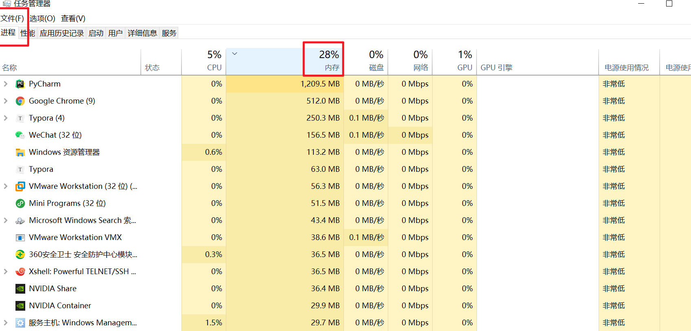
查看内存使用率，内存是系统及其重要的一个资源，内存大小，基本上决定了你电脑能打开多少个应用程序，所以你想同时听课、写代码、学于超老师的linux课，做笔记，聊微信，这么多事，需要你的内存足够大，打得开这么多软件。
否则就会出现，卡死，内存不足，无法运行软件。
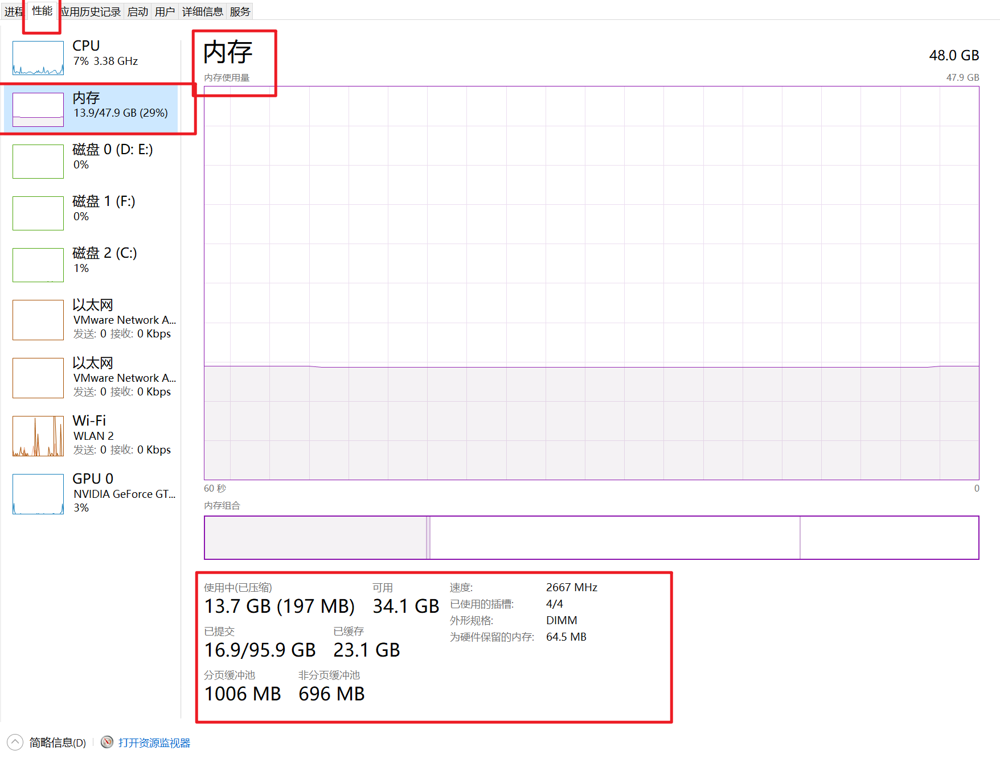
我们也可以通过资源管理器，找到很占资源的应用，关闭它
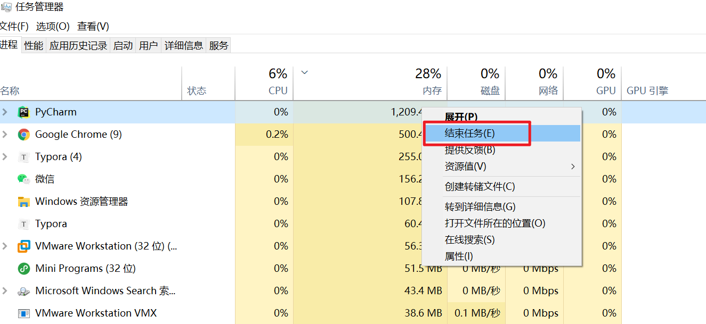
当然这是windows的用法，linux可不会提供这个画面给你点点点，基本上使用命令来进行进程管理
上述一样的操作，linux就得用命令行了。
但是进程管理的目的，都是一样
- 查看系统中运行的程序，及其程序信息
- 查看该程序的资源使用率，判断机器健康，肯定是资源用的越多，机器负担越大，前面超哥讲过，计算机硬件好比人类的身体，你的大脑负担越重，眼睛负担越重，人的压力也就越大，甚至累倒。
- 终止不需要的程序
对于新手可能觉得windows的进程管理，更直白，更好看，但是如果让你管理多个进程，自动化管理进程的启动、结束，重启，那么图形化就显得费劲了，因此linux果然是适合专业性IT人才使用的，更为高效。
linux资源管理器
linux中对需要运维去管理、去查看的资源信息，如下
- 内存资源、使用率
- free命令
- 磁盘资源、使用率
- df
- CPU资源、使用率
- top
- htop
- glances
- 进程资源、使用率
- ps
- pstree
- pidof
- 网络资源、使用率
- Iftop
- 所有资源的整体查看命令
- top
- glances
- htop
一、什么是进程
计算机核心是CPU，承担机器的计算任务，好比是一座工厂，时刻在运行着。
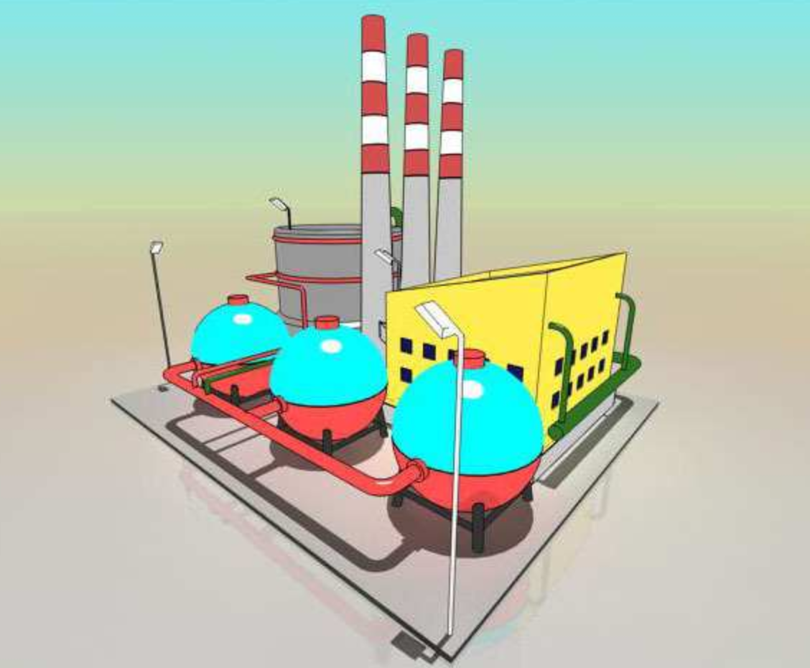
一个工厂（计算机），可以有多个车间，同时在工作。（计算机有多个进程，同时在运行）
进程是正在执行的一个程序或命令，每个进程都是一个运行的实体，并占用一定的系统资源。
程序是人使用计算机语言编写的可以实现特定目标或解决特定问题的代码集合。
简单来说，程序是人使用计算机语言编写的，可以实现一定功能，并且可以执行的代码集合。
进程是正在计算机执行中的程序。
举例：谷歌浏览器是一个程序，当我们打开谷歌浏览器，就会在系统中看到一个浏览器的进程，当程序被执行时，程序的代码都会被加载入内存，操作系统给这个进程分配一个 ID，称为 PID（进程 ID）。
我们打开多个谷歌浏览器，就有多个浏览器子进程，但是这些进程使用的程序，都是chrome。
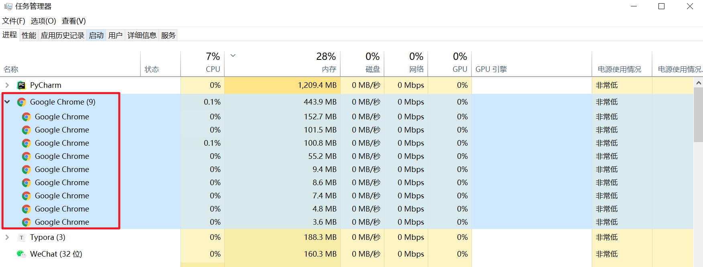
1.1 进程、程序的关系
1. 开发把代码写好了，打个压缩包给你，还未运行的时候，这就是个静态、程序源代码，程序是数据和指令的集合。
2. 当运维将开发的代码运行起来之后，就称之为进程（机器上一个在运行的程序）
3. 程序运行时，系统为了清晰的标记每一个进程，为其分配了PID、运行的用户、内存、CPU等使用情况。
1.1.1 进程、线程、协程
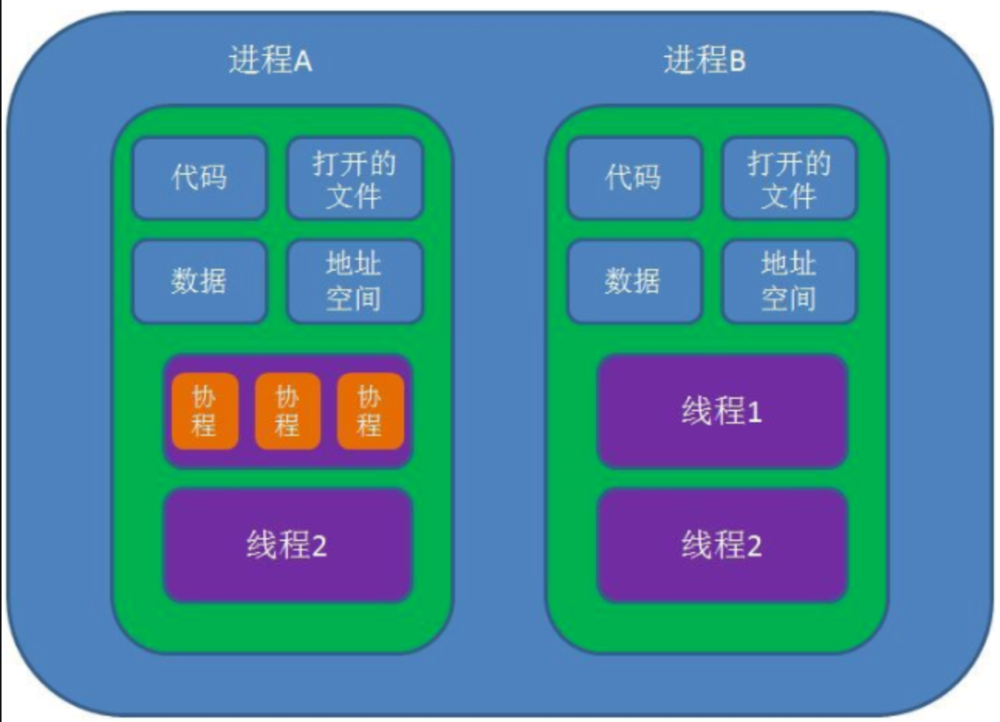
1.2 进程fork概念
1.我们的操作系统都是一堆进程而已，系统运行时，就产生了0号进程，然后其他进程都是0号进程创建的子进程。
2.linux启动之后，第一个进程就是PID为0，然后通过0号进程fork()出其他的进程。
3.操作系统的运行，就是不断的创建进程、以及销毁进程。
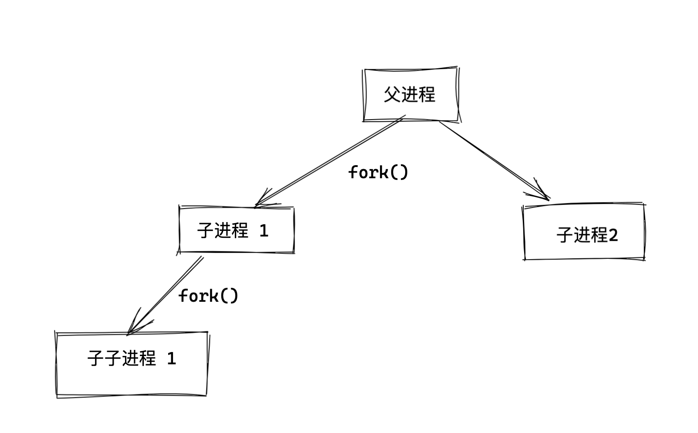
[root@yuchao-linux01 ~]# ps -ef |head -5
UID PID PPID C STIME TTY TIME CMD
root 1 0 0 12:33 ? 00:00:01 /usr/lib/systemd/systemd --switched-root --system --deserialize 22
root 2 0 0 12:33 ? 00:00:00 [kthreadd]
root 3 2 0 12:33 ? 00:00:00 [ksoftirqd/0]
root 5 2 0 12:33 ? 00:00:00 [kworker/0:0H]
1.3 孤儿进程
1.当父亲进程挂了，导致儿子进程成了孤儿，甚至是一个、或者多个孤儿进程。
2.孤儿进程会被系统的1号进程收养，并且有1号进程来回收，处理这些孤儿进程。
3.孤儿进程就是失去了原本父亲的进程，1号进程好比是孤儿院，专门处理孤儿进程的善后工作，因此孤儿进程不会对系统产生什么危害。
# 于超老师教你用python实现，孤儿进程。
[root@yuchao-linux01 ~]# cat guer.py
#coding:utf-8
import os
import sys
import time
pid = os.getpid()
ppid = os.getppid()
print 'im father: ', 'pid: ', pid, 'ppid: ', ppid
son_pid = os.fork()
print('now song_pid is: ',son_pid)
#执行pid=os.fork()则会生成一个子进程
#返回值pid有两种值：
# 如果返回的pid值为0，表示在子进程当中
# 如果返回的pid值>0，表示在父进程当中
if son_pid > 0:
print 'father going die...'
# 让老父亲，主动退出，挂掉
sys.exit(0)
# 保证主线程退出完毕
# 程序延迟了1秒，还在运行中，儿子进程还未挂，成了孤儿
time.sleep(2)5
print 'im child: ', os.getpid(),'now my father is: ', os.getppid()
查看孤儿进程
[root@yuchao-linux01 ~]# python guer.py
im father: pid: 1953 ppid: 1930
('now song_pid is: ', 1954)
father going die...
('now song_pid is: ', 0)
[root@yuchao-linux01 ~]# im child: 1954 now my father is: 1
[root@yuchao-linux01 ~]#
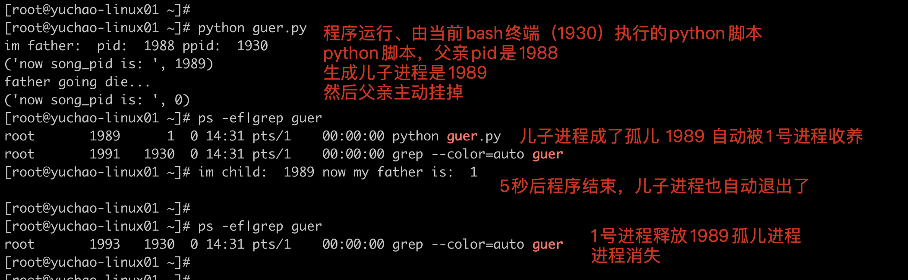
1.程序运行时，生成了父亲进程、儿子进程
2.父亲进程突然挂了、儿子成了孤儿，被1号进程收养
3.儿子进程的诞生是为了执行程序，程序结束后，被1号进程释放，消失在了这个美丽的世界。
1.4 僵尸进程
1.僵尸听着明显比孤儿进程可怕些，是有害的
2.父亲进程创建出子进程后，如果子进程先挂了，父进程却不知道儿子进程挂了这件事，就无法正确送走儿子进程，清楚它在系统中的信息，那么这个儿子进程就成了可怕的僵尸进程，会对系统产生危害。
3.当系统中有了僵尸进程，你可以通过ps命令找到它，并且它的状态是（Z，zombie僵尸进程）
4.如果系统中产生大量僵尸进程，占据了系统中大量可分配的资源，如进程id号，系统就无法再正确创建新进程，完成任务，导致系统无法使用的危害。
# 于超老师教你用python实现，僵尸进程
#coding:utf-8
from multiprocessing import Process
import time,os
def run():
print('son_pid: ',os.getpid())
if __name__ == '__main__':
p=Process(target=run)
p.start()
print('father_pid: ',os.getpid())
time.sleep(1000)
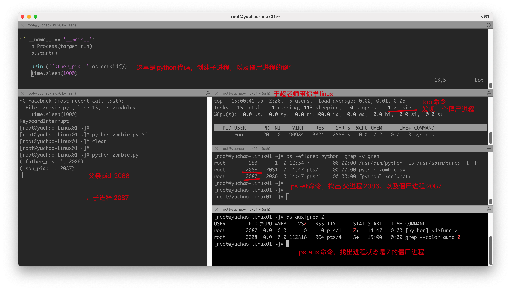
验证僵尸进程的确存在
[root@yuchao-linux01 ~]# ps -ef|grep 2086 |grep -v grep
root 2086 2051 0 14:47 pts/1 00:00:00 python zombie.py
root 2087 2086 0 14:47 pts/1 00:00:00 [python] <defunct>
[root@yuchao-linux01 ~]# ps aux|grep Z |grep -v grep
USER PID %CPU %MEM VSZ RSS TTY STAT START TIME COMMAND
root 2087 0.0 0.0 0 0 pts/1 Z+ 14:47 0:00 [python] <defunct>
1.4.1 解决僵尸进程
杀死父进程
优化代码，不要再写这种垃圾代码了，把unix高级编程，好好学学。
- 开除、换一个更懂操作系统的程序员。
1. 可以主动kill 父亲进程pid
2. 如果程序会自动结束的话，比如time.sleep()时间到期，也会退出所有进程。
1.4.2 轻松理解僵尸进程
1.全中国的中国移动网络好比是一个操作系统，控制着全中国的移动用户通信，每一个中国百姓就是一个进程，每一个百姓都有一个手机号，该号码就好比进程的pid，对应这个进程。
2.如果这个人再也不用手机了，不要手机号了，应该去移动注销手机号（告诉操作系统，回收pid）
3.如果不去注销（不回收pid），这个手机号依然被你保留着，毫无意义不说，且占用了一个号码，浪费手机号，（浪费系统中pid的资源），应该去释放手机号。
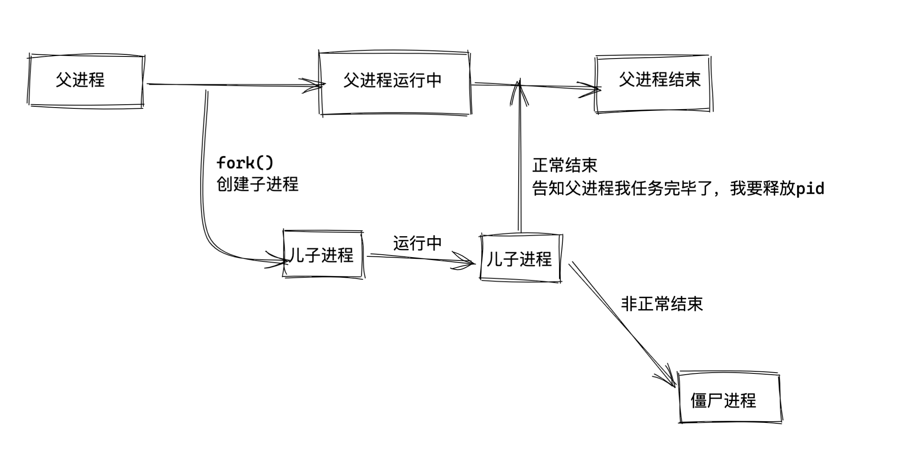
进程的生命周期
1. 当程序运行的时候，通过父进程fork创建子进程去处理任务。
2. 子进程被创建后开始处理任务，任务处理完毕后就退出了，子进程应该去通知父进程，将儿子进程销毁，别浪费资源。
3. 如果子进程没有正确告知父进程，回收自己的系统资源，且父进程还未结束，导致该子进程成为僵尸进程。
二、进程管理命令
如果你发现电脑奇卡无比，你可能就得打开任务管理器，找找是哪个程序，占用CPU，内存，磁盘资源特别高，如果它没有用，干掉即可。
同样的，运维维护linux服务器，要保证机器健康运行，第一步就是盯紧了服务器的CPU，内存，磁盘，网络，这几大资源使用率。
1、top查看 CPU使用情况
命令：top
作用：查看服务器的进程占用的资源（100%使用）
语法：# top （动态显示）
top操作快捷键
z：：打开，关闭颜色
M（大写）：表示将结果按照内存（MEM）从高到低进行降序排列；
m(小写)：切换内存memmory的显示格式。
P（大写）：，表示将结果按照CPU 使用率从高到低进行降序排列；
1 ：当服务器拥有多个cpu 的时候可以使用“1”快捷键来切换是否展示显示各个cpu 的详细信息；
q：退出
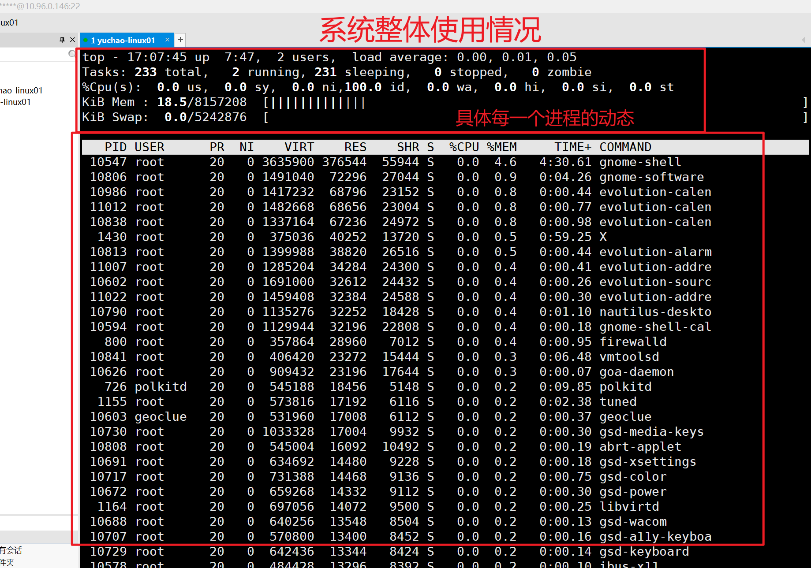
快捷键
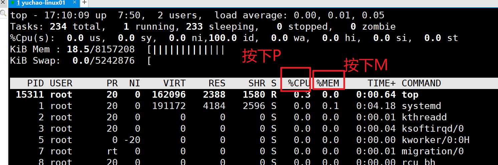
1）系统整体信息：
①第一行
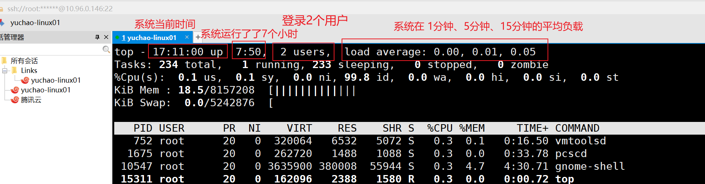
| 内 容 | 说 明 |
|---|---|
| 17:13:00 | 系统当前时间 |
| up 7:53 | 系统的运行时间.本机己经运行 13 小时 05 分钟 |
| 2 users | 当前登录了三个用户 |
| load average: 0.00, 0.01，0.05 | 系统在之前 1 分钟、5 分钟、15 分钟的平均负载。如果 CPU 是单核的，则这个数值超过 1 就是高负载：如果 CPU 是四核的，则这个数值超过 4 就是高负载 |
按下键盘字母上方的数字1，可以显示多核CPU状态
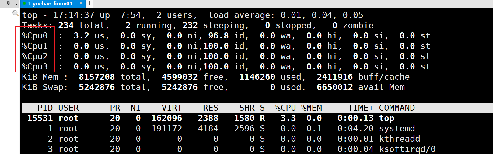
也可以通过该命令，获取CPU信息，linux信息都可以通过文件读取到
[root@yuchao-linux01 opt]# grep 'core id' /proc/cpuinfo
core id : 0
core id : 1
core id : 0
core id : 1
[root@yuchao-linux01 opt]# grep 'core id' /proc/cpuinfo | sort -u
core id : 0
core id : 1
[root@yuchao-linux01 opt]# grep 'core id' /proc/cpuinfo | sort -u | wc -l
2
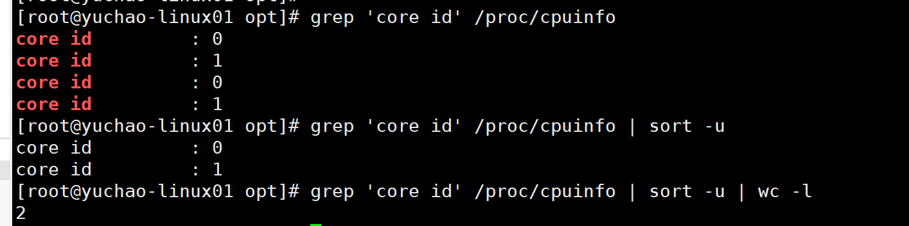
虚拟机的硬件信息，通过vmware设置
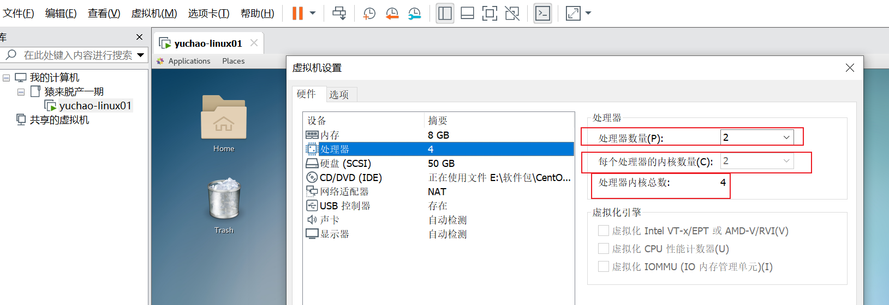
可见，我们这台机器有2颗CPU，每个处理器的内核是2个，因此总共四个内核，可以用于计算工作。
②第二行
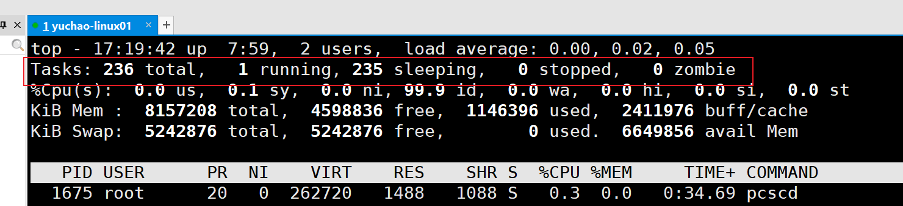
| Tasks: 236 total | 系统中的进程总数 |
|---|---|
| 1 running | 正在运行的进程数 |
| 235 sleeping | 睡眠的进程数 |
| 0 stopped | 正在停止的进程数 |
| 0 zombie | 僵尸进程数。如果不是 0，则需要手工检查僵尸进程 |
③第三行
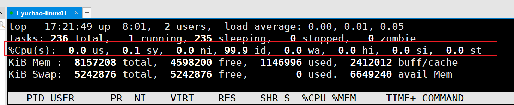
这些资源，做好笔记，了解即可，需要考虑到用户态、内核态，往后架构部署复杂后，可能会来查看此类CPU的使用情况。
| 内 容 | 说 明 |
|---|---|
| Cpu(s): 0.1 %us | 用户模式占用的 CPU 百分比 |
| 0.1%sy | 系统模式占用的 CPU 百分比 |
| 0.0%ni | 改变过优先级的用户进程占用的 CPU 百分比 |
| 99.9%id | idle缩写，空闲 CPU 占用的 CPU 百分比 |
| 0.1%wa | 等待输入/输出的进程占用的 CPU 百分比 |
| 0.0%hi | 硬中断请求服务占用的 CPU 百分比 |
| 0.1%si | 软中断请求服务占用的 CPU 百分比 |
| 0.0%st | st（steal time）意为虚拟时间百分比，就是当有虚拟机时，虚拟 CPU 等待实际 CPU 的时间百分比 |
问题，服务器有8核，想查看每一颗核心的负载情况怎么办？
top按1
④第四行
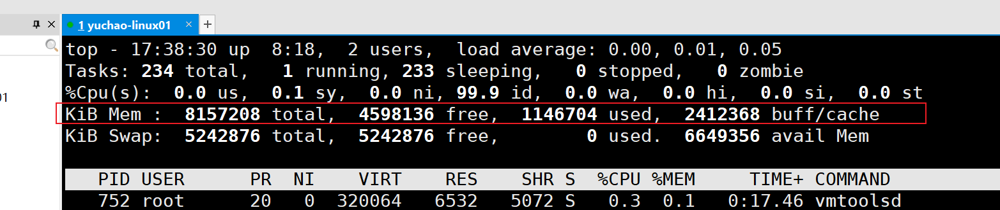
内存使用率，若是觉得数字不够直观，按下小写m键，切换显示
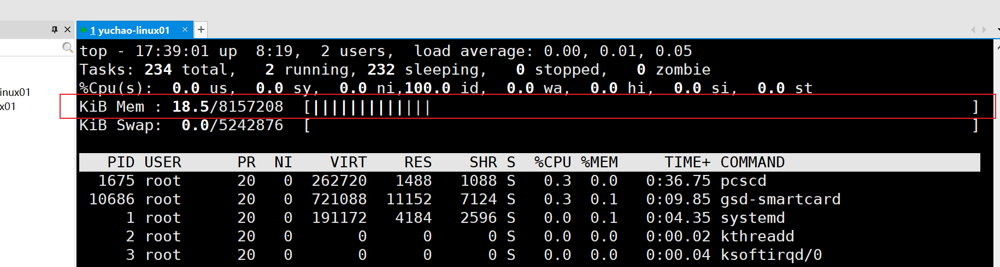
| 内 容 | 说 明 |
|---|---|
| Mem: 8157208 total | 物理内存的总量，单位为KB，目前是8157208/1024=7966MB≈8G |
| 1143000 used | 己经使用的物理内存数量。 |
| 4598168 free | 空闲的物理内存数量。 |
| 2412392 buff/cache | 作为缓冲的内存数量 |
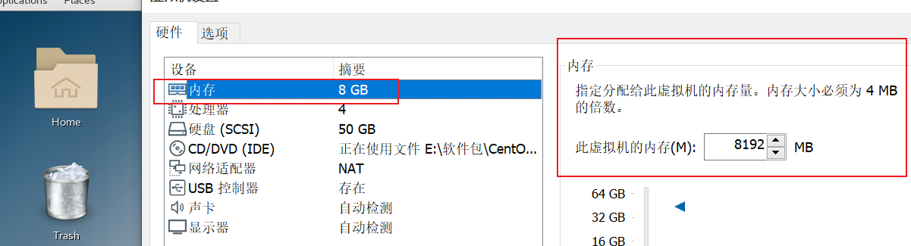
⑤第五行
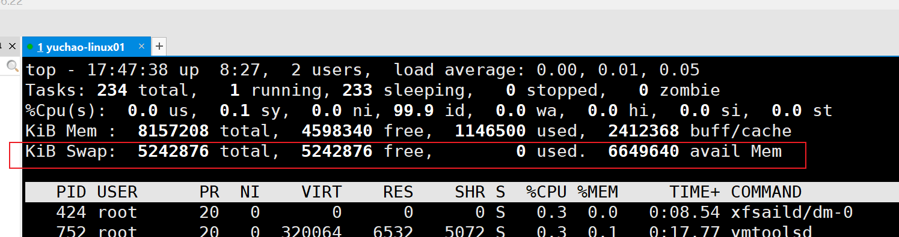
| 内 容 | 说 明 |
|---|---|
| Swap: 5242876 total | 交换分区（虚拟内存）的总大小 |
| 0 used | 已经使用的交换分区的大小 |
| 5242876 free | 空闲交换分区的大小 |
| 6649640 avail Mem | 可用内存 |
==swap分区是一块特殊的硬盘空间==，当实际内存不够用的时候，操作系统会从磁盘中取出一部分暂时不用的数据，放在交换内存中，从而使当前的程序腾出更多的内存量。
Linux中Swap（即：交换分区），类似于Windows的虚拟内存，就是当内存不足的时候，把一部分硬盘空间虚拟成内存使用，从而解决内存容量不足的情况。
使用swap交换分区作用是，通过操作系统的调取，程序可以用到的内存远超过实际物理内存。
磁盘价格要比内存便宜的多，因此使用swap交换空间是很实惠的，但是由于频繁的读写硬盘，==这种方式会降低系统运行效率。==
提示，线上环境，这个swap缓存功能是直接关闭的。
问题来了，通过top你可以看到这些信息，如果发现负载情况较高比如
- 平均负载率高了，1分钟、5分钟、15分钟的负载值，超过了CPU核数
- 内存使用的很多
- CPU使用的百分比很高
怎么办？
肯定是找到对应的进程，看看这是个什么鬼，要不要干掉它。
2）具体进程信息
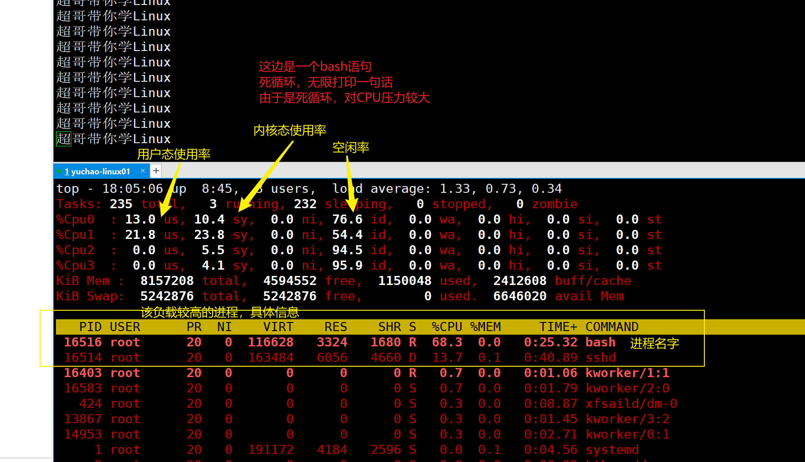
我们可以看到，这个CPU使用率已经达到了68.3的进程，是这个叫做bash的任务。
ps进程区域信息，字段解释
因此你就得分析这个进程，它的信息，这一行的字段，解释如下。
| PID | 进程的 ID。 |
|---|---|
| USER | 该进程所属的用户。 |
| PR | 优先级，数值越小优先级越高。 |
| NI | 优先级，数值越小优先级越高。 |
| VIRT | 该进程使用的虚拟内存的大小，单位为 KB。 |
| RES | 该进程使用的物理内存的大小，单位为 KB。 |
| SHR | 共享内存大小，单位为 KB。计算一个进程实际使用的内存 = 常驻内存（RES）- 共享内存（SHR） |
| S | 进程状态。其中S 表示睡眠，R 表示运行 |
| %CPU | 该进程占用 CPU 的百分比。 |
| %MEM | 该进程占用内存的百分比。 |
| TIME+ | 该进程共占用的 CPU 时间。 |
| COMMAND | 进程名 |
问：如果发现服务器的CPU何负载过大，怎么办？
执行top命令，按下P，查看CPU使用最多的进程是哪一个，它是干什么的这个任务，然后决定下一步的处理。
问题：如果发现内存空闲率很低，内存不够用了，怎么办
top命令，看下大写M，查看内存使用率排行，从高到低排列。
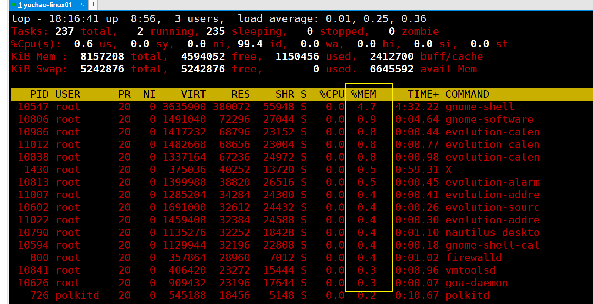
top命令看完系统状况后，按下q键，即可退出这个交互式命令。
1.1 htop命令
顾名思义，top就是比htop更好用的工具，支持鼠标点击，选择进程。
#安装命令
[root@chaogelinux ~]# yum install htop -y
1.直接输入htop命令，进入画面，各项指标和top相似
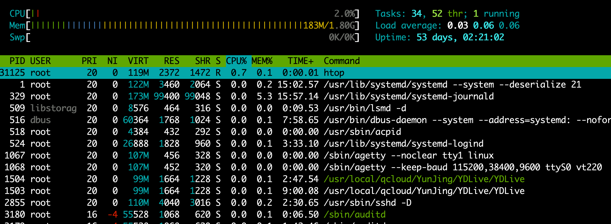
2.调整htop风格
在htop监控页面中，添加主机名，以及时间
1. 进入htop
2. 按下F2（setup），进入设置，针对Meters，记录可以修改记录显示风格
3. 上下左右，移动，状态栏会发生变化（空格键，更改风格）
4. 按下回车键，可以选择添加表(meters)
5. F10保存
6. htop能够记忆用户的设置
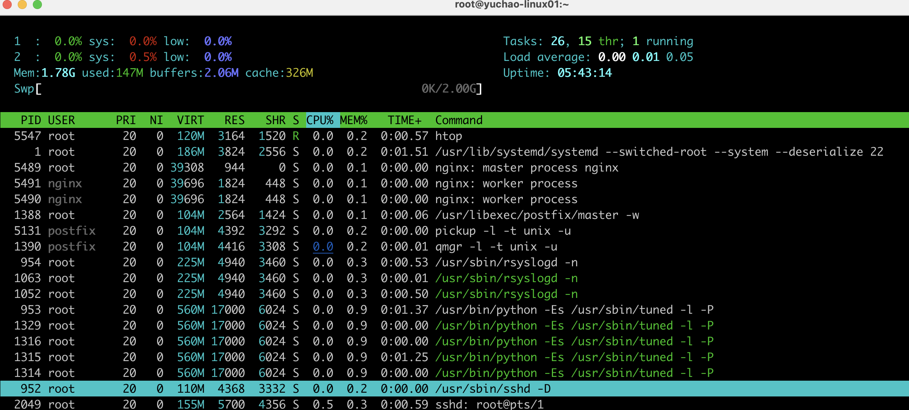
3.搜索进程
按下f3，输入进程名字，即可找到进程
4.杀死进程
定位到想要杀死进程的哪一行，按下F9
选择发送给进程的信号，一般是15，正常中断进程
回车，进程就挂了
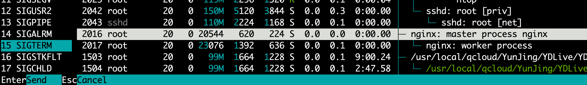
5.显示进程树，F5。
6.其他快捷键
M：按照内存使用百分比排序，对应MEM%列；
P：按照CPU使用百分比排序，对应CPU%列；
T：按照进程运行的时间排序，对应TIME+列；
K：隐藏内核线程；
H：隐藏用户线程；
#：快速定位光标到PID所指定的进程上。
/：搜索进程名
2、ps查看进程
命令：ps（process status 进程状态）
语法：ps [参数选项]
作用：主要是查看服务器的进程信息，并且是打印当前的运行状态快照，而不是实时的监控，只是某一时刻的系统进程信息。
2.1 ps参数
参数风格，请注意，参数的位置，存在先后关系，位置错误可能导致无法使用。
# UNIX风格，没有短横线
a # 显示所有终端、所有用户执行的进程
u # 以用户显示出进程详细信息
x # 显示操作系统所有进程信息
f # 显示进程树形结构
o # 格式化显示进程信息，指定如pid
k # 对进程属性排序，如k %mem ，正序排序 ，k -%mem 逆序
--sort，再进行排序，如 --sort %mem 根据内存使用率显示
linux标准参数用法
-e # 显示所有进程
-f # 显示进程详细
-p # 指定pid，显示其信息，如 ps -fp 2609
-C # 指定进程的名字查看，如ps -fC sshd
-U # 指定用户名，查看用户进程信息 ps -Uf yuchao01
ps命令用于报告当前系统的进程状态。
可以搭配kill指令随时中断、删除不必要的程序。
ps命令是最基本同时也是非常强大的进程查看命令，使用该命令可以确定有哪些进程正在运行和运行的状态、进程是否结束、进程有没有僵死、哪些进程占用了过多的资源等等，总之大部分信息都是可以通过执行该命令得到的。
不接受任何参数
ps不加参数，输出的是当前用户所在终端的进程
[root@yuchao-linux01 ~]# ps
PID TTY TIME CMD
19658 pts/0 00:00:00 bash
19713 pts/0 00:00:00 ps
PID：进程的标识号
TTY：进程所属的控制台号码
TIME：进程使用CPU总的时间
CMD：正在执行的命令行
ps -ef
ps -ef
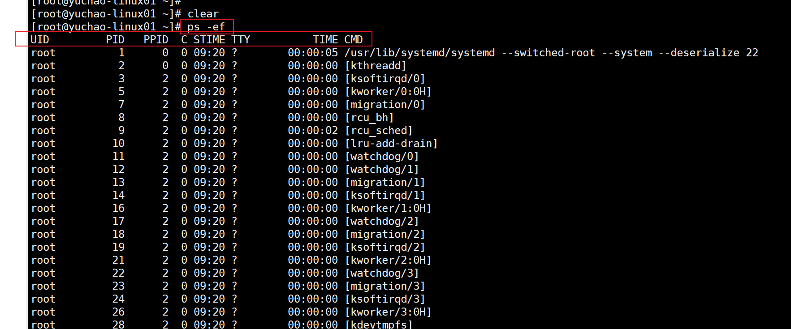
| UID | 该进程执行的用户ID |
|---|---|
| PID | 进程ID |
| PPID | 该进程的父级进程ID，如果找不到，则该进程就被称之为僵尸进程（Parent Process ID） |
| C | Cpu的占用率，其形式是百分数 |
| STIME | 进程的启动时间 |
| TTY | 终端设备，发起该进程的设备识别符号，如果显示“?”则表示该进程并不是由终端设备发起 |
| TIME | 进程实际使用CPU的时间 |
| CMD | 该进程的名称或者对应的路径 |
[root@yuchao-linux01 ~]# ps -ef |head -1
UID PID PPID C STIME TTY TIME CMD
[root@yuchao-linux01 ~]# ps -ef |tail -5
root 3001 2 0 16:34 ? 00:00:00 [kworker/1:2]
root 3235 2 0 16:37 ? 00:00:00 [kworker/0:0]
jack01 3253 2629 0 16:37 pts/0 00:00:00 sleep 1
root 3254 2051 0 16:37 pts/1 00:00:00 ps -ef
root 3255 2051 0 16:37 pts/1 00:00:00 tail -5
场景：当运维小于在公司里，发现监控报警了，给自己的微信发了个通知，应用服务器CPU使用率超过85%，自己得抓紧看看是什么问题。
这就得进一步确定高占用CPU程序的信息
1.查看top，进行CPU使用率排行最高的进程信息
top
2.查看ps -ef命令，再grep过滤出，你想要的信息。
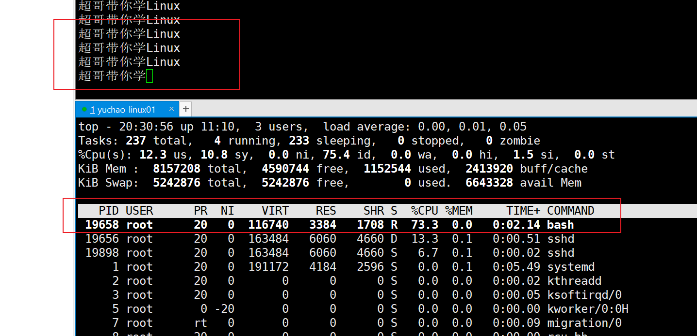
ps找出这个进程信息。
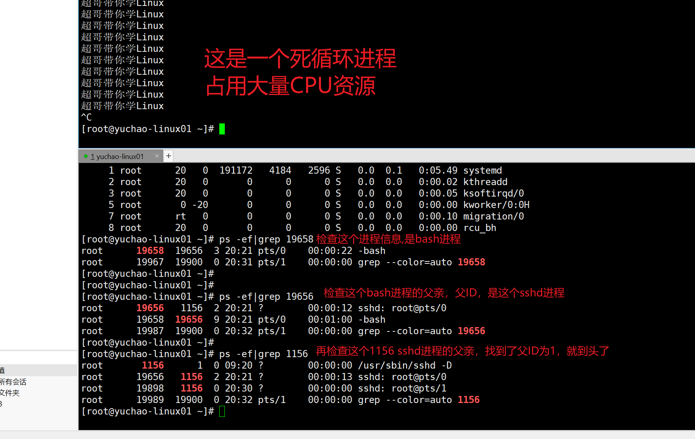
至此，我们已经学会，通过ps命令，找出关于进程的信息了
主要用法就是，查看进程的PID号码。
ps aux
组合命令，使用BSD语法显示进程信息
[root@chaogelinux ~]# ps aux
USER PID %CPU %MEM VSZ RSS TTY STAT START TIME COMMAND
root 1 0.0 0.1 125452 3460 ? Ss 10月20 14:31 /usr/lib/systemd/systemd --system --deserialize 21
root 2 0.0 0.0 0 0 ? S 10月20 0:00 [kthreadd]
root 3 0.0 0.0 0 0 ? S 10月20 0:44 [ksoftirqd/0]
解释
- USER：该进程属于的用户
- PID：该进程号码
- %CPU：进程占用CPU的资源比率
- %MEM：该进程占用物理内存百分比
- VSZ：进程使用的虚拟内存，单位Kbytes
- RSS：该进程占用固定的内存量，单位Kbytes
- TTY：该进程运行的终端位置
- STAT：进程目前状态，可以man ps查看细节
- R：正在运行中
- S：终端睡眠中，可以被唤醒
- D：不可中断睡眠
- T：进程被暂停
- Z：已停止，无法由父进程正常终止，变成了zombie僵尸进程
- 进程额外字符
- +：前台进程，比如R+，程序运行在前台，一旦终止，程序结束，数据丢失。
- I：多线程进程，如Sl表示程序是多线程
- N：低优先级进程，如Sn表示优先级很低的进程
- <：高优先级进程
- s：进程领导者（含有子进程），如Ss表示父进程
- L：锁定到内存中
- 进程额外字符
- START：进程启动时间
- TIME：CPU运行时间
- COMMAND：进程命令，名字带有
[]表示内核态进程，没有[]表示是用户执行的进程。
如
[root@yuchao-linux01 ~]# ps -ef |tail -5
root 3235 2 0 16:37 ? 00:00:00 [kworker/0:0]
root 3562 2 0 16:42 ? 00:00:00 [kworker/0:2]
jack01 3620 2629 0 16:43 pts/0 00:00:00 sleep 1
root 3621 2051 0 16:43 pts/1 00:00:00 ps -ef
root 3622 2051 0 16:43 pts/1 00:00:00 tail -5
ps结合grep
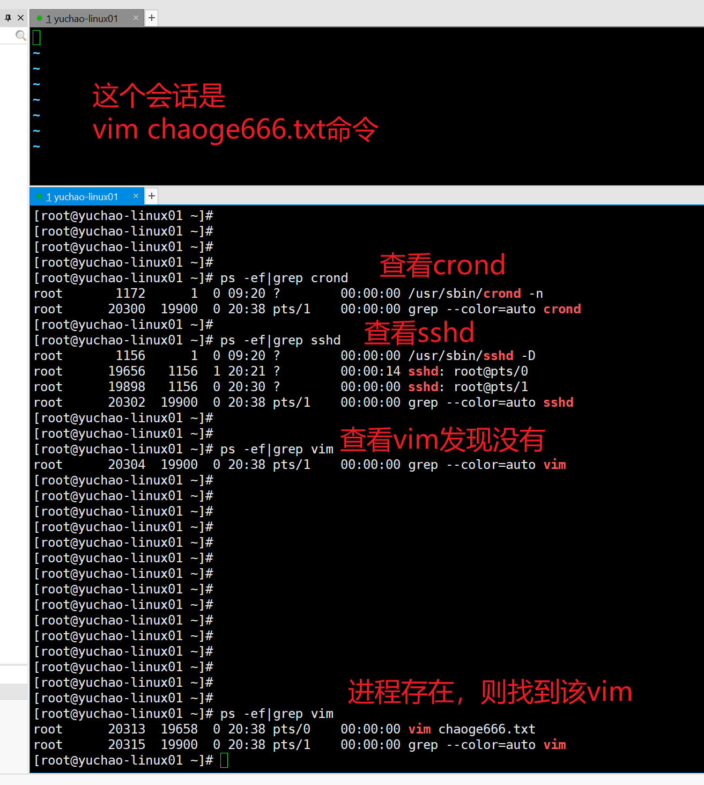
grep取反
同学们会发现总有一个grep进程
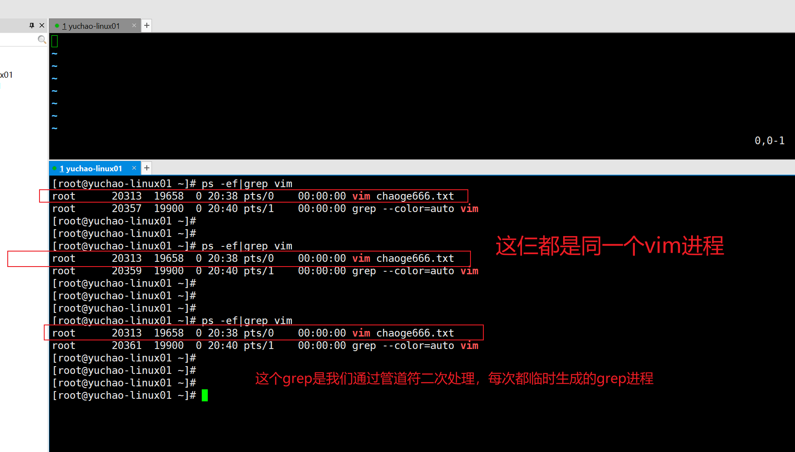
可以grep过滤掉。
语法
grep -v 选项，取反
[root@yuchao-linux01 ~]# ps -ef|grep vim |grep -v grep
root 20313 19658 0 20:38 pts/0 00:00:00 vim chaoge666.txt
2.1 ps常用命令组合（重点）
参数记忆
参数风格，请注意，参数的位置，存在先后关系，位置错误可能导致无法使用。
# UNIX风格，没有短横线
a # 显示所有终端、所有用户执行的进程
u # 以用户显示出进程详细信息
x # 显示操作系统所有进程信息
f # 显示进程树形结构
o # 格式化显示进程信息，指定如pid
k # 对进程属性排序，如k %mem ，正序排序 ，k -%mem 逆序
--sort，再进行排序，如 --sort %mem 根据内存使用率显示
linux标准参数用法
-e # 显示所有进程
-f # 显示进程详细
-p # 指定pid，显示其信息，如 ps -fp 2609
-C # 指定进程的名字查看，如ps -fC sshd
-U # 指定用户名，查看用户进程信息 ps -Uf yuchao01
练习
最常用的就是直接
ps auxf 结合管道符做过滤即可
显示机器所有进程信息
[root@yuchao-linux01 ~]# ps aux
查看进程父子关系
[root@yuchao-linux01 ~]# ps auxf
查看ssh相关所有进程，以及他们的父子关系
[root@yuchao-linux01 ~]# ps auxf |grep ssh
root 952 0.0 0.2 113008 4368 ? Ss 12:34 0:00 /usr/sbin/sshd -D
root 2049 0.0 0.3 159012 5700 ? Ss 14:45 0:00 \_ sshd: root@pts/1
root 4978 0.0 0.0 112812 980 pts/1 S+ 17:09 0:00 | \_ grep --color=auto ssh
root 2609 0.2 0.3 159012 5696 ? Ss 16:28 0:06 \_ sshd: root@pts/0
查看指定用户的进程信息
[root@yuchao-linux01 ~]# ps u -U jack01
USER PID %CPU %MEM VSZ RSS TTY STAT START TIME COMMAND
jack01 4986 93.0 0.0 115544 1800 pts/0 R+ 17:11 2:00 -bash
查看指定pid的进程信息
[root@yuchao-linux01 ~]# ps u -p 4986
USER PID %CPU %MEM VSZ RSS TTY STAT START TIME COMMAND
jack01 4986 93.3 0.0 115544 1800 pts/0 R+ 17:11 2:35 -bash
指定字段格式化显示结果
[root@yuchao-linux01 ~]# ps axfo pid,cmd,%cpu,%mem
指定显示结果，做格式化打印，并且以cpu从大到小排序
[root@yuchao-linux01 ~]# ps axo pid,cmd,%cpu,%mem k -%cpu
按内存使用率排序，从大到小
[root@yuchao-linux01 ~]# ps axo pid,cmd,%cpu,%mem --sort -%mem
2.2 pstree命令
作用、以树状图，显示父进程和子进程的关系
pstree 选项 [pid|user]
-p 显示pid
-u 显示用户切换
-H pid 高亮显示进程（没什么用）
-a 显示程序的完整命令，以及进程层级关系
用法
需安装
[root@yuchao-linux01 ~]# yum install psmisc -y
查看指定pid，一号进程的所有父子进程（用户角度运行的进程）
[root@yuchao-linux01 ~]# pstree 1
查看指定用户，关于这个用户生成的父子进程关系
[root@yuchao-linux01 ~]# pstree jerry01
查看jerry01用户生成的所有进程，且显示进程pid
[root@yuchao-linux01 ~]# pstree -ap jerry01
显示进程树，以及对应进程的执行用户名
[root@yuchao-linux01 ~]# pstree -ua
2.3 pidof命令
pidof命令
指定进程名，显示出其pid
如显示出nginx进程号
[root@yuchao-linux01 ~]# pidof nginx
5491 5490 5489
2.4 lsof查看进程打开了什么文件
比如，当我们需要检查网站服务器的nginx进程，以及nginx都打开了哪些文件，比如nginx记录的日志，写入到了什么文件里，lsof可以轻松帮你找到这些文件。
linux一切皆文件，任何事务都以文件的形式存在，通过文件，不仅可以直接访问到文本数据，常规数据，甚至网络连接(socket套接字文件)、以及硬件(/dev/sda)，都以文件形式可以在linux管理。
常用参数
-c # 指定进程名，打开了哪些系统文件，如lsof -c nginx
-i # 显示符合条件的进程，如ipv[46][protocol][@host|addr][:service|port]
-p # 显示指定pid打开的文件
-u # 显示指定用户uid打开的文件，以及具体进程信息
+d # 显示文件夹下被打开的文件有哪些，如 lsof +d /var/log/nginx/
+D # 递归列出目录下哪些文件被进程打开
-n # 不显示主机名，直接显示ip
-P # 不显示端口名，直接显示端口号
-s # 列出文件大小
状态解释
[root@yuchao-linux01 log]# lsof +D /var/log/nginx/ | head -2
COMMAND PID USER FD TYPE DEVICE SIZE/OFF NODE NAME
nginx 5489 root 2w REG 253,0 0 17579733 /var/log/nginx/error.log
名称
进程标识符id号
进程执行的用户主
文件描述符
文件类型 reg普通文本 DIR目录
NODE 索引节点（文件在磁盘上的标识）
NAME 进程打开文件的名字
实践
# 直接输入lsof，显示当前用户打开的所有文件，过滤出你需要查找的文件，对应的进程
[root@yuchao-linux01 ~]# lsof |grep access.log
# 查看占用文件的进程
[root@yuchao-linux01 log]# lsof /var/log/nginx/access.log
# 查看指定pid号（父进程）打开了什么文件
[root@yuchao-linux01 log]# lsof -p $(cat /var/run/nginx.pid)
# 查看指定程序名，打开的文件
[root@yuchao-linux01 log]# lsof -c nginx
# 查看指定用户打开的文件
[root@yuchao-linux01 log]# lsof -u jerry01
# 查看指定目录打开的文件，以及递归查看
[root@yuchao-linux01 log]# lsof +d /var/log
[root@yuchao-linux01 log]# lsof +D /var/log
# 查看指定ip的网络连接情况（如有人访问了你的nginx）
[root@yuchao-linux01 log]# lsof -i @192.168.0.240:80
# 查看指定TCP状态的连接情况
[root@yuchao-linux01 log]# lsof -n -P -i TCP -s TCP:LISTEN
2.4.1 生产经验案例(lsof文件误删恢复)
# 1.确保nginx在运行中，以及有日志数据
[root@yuchao-linux01 log]# tail -f /var/log/nginx/access.log
# 2. lsof查看关于该日志文件的进程
[root@yuchao-linux01 ~]# lsof |grep /var/log/nginx/access.log
nginx 5489 root 5w REG 253,0 1353 17579732 /var/log/nginx/access.log
nginx 5490 nginx 5w REG 253,0 1353 17579732 /var/log/nginx/access.log
nginx 5491 nginx 5w REG 253,0 1353 17579732 /var/log/nginx/access.log
tail 6112 root 3r REG 253,0 1353 17579732 /var/log/nginx/access.log
# 3.模拟误删除该文件（但是进程没有退出，该文件描述符还未被释放，还是可以恢复的）
[root@yuchao-linux01 ~]# rm -f /var/log/nginx/access.log
[root@yuchao-linux01 ~]# ll /var/log/nginx/access.log
ls: cannot access /var/log/nginx/access.log: No such file or directory
# 4.再次查看文件描述符（文件名多了一个deleted被删除的标记）
[root@yuchao-linux01 ~]# lsof |grep /var/log/nginx/access.log
nginx 5489 root 5w REG 253,0 1353 17579732 /var/log/nginx/access.log (deleted)
nginx 5490 nginx 5w REG 253,0 1353 17579732 /var/log/nginx/access.log (deleted)
nginx 5491 nginx 5w REG 253,0 1353 17579732 /var/log/nginx/access.log (deleted)
tail 6112 root 3r REG 253,0 1353 17579732 /var/log/nginx/access.log (deleted)
# 5.此时进入linux中一个管理所有进程的目录，/proc，找到对应的进程id目录（父亲进程id），进入其管理文件描述符的地方。
[root@yuchao-linux01 fd]# pwd
/proc/5489/fd
[root@yuchao-linux01 fd]# ll
total 0
lrwx------ 1 root root 64 Mar 20 19:14 0 -> /dev/null
lrwx------ 1 root root 64 Mar 20 19:14 1 -> /dev/null
lrwx------ 1 root root 64 Mar 20 19:14 10 -> socket:[75619]
l-wx------ 1 root root 64 Mar 20 19:14 2 -> /var/log/nginx/error.log
lrwx------ 1 root root 64 Mar 20 19:14 3 -> socket:[75616]
l-wx------ 1 root root 64 Mar 20 19:14 4 -> /var/log/nginx/error.log
l-wx------ 1 root root 64 Mar 20 19:14 5 -> /var/log/nginx/access.log (deleted)
lrwx------ 1 root root 64 Mar 20 19:14 6 -> socket:[76223]
lrwx------ 1 root root 64 Mar 20 19:14 7 -> socket:[76224]
lrwx------ 1 root root 64 Mar 20 19:14 8 -> socket:[75617]
lrwx------ 1 root root 64 Mar 20 19:14 9 -> socket:[75618]
# 6.我们看到的这个5软连接文件，就对应了刚才的access.log日志文件
[root@yuchao-linux01 fd]# cat 5
# 7.恢复此文件描述符的数据，到日志文件即可完成文件恢复
[root@yuchao-linux01 fd]# cat 5 > /var/log/nginx/access.log
3、kill关闭进程
命令：kill
语法：kill [信号] PID
作用：kill 命令会向操作系统内核发送一个信号（多是终止信号）和目标进程的 PID，然后系统内核根据收到的信号类型，对指定进程进行相应的操作
3.0 什么是信号(signal)
简单说就是向进程发送的一个控制信号，一般用于杀死、停止进程。
每个信号都用一个数字表示。
[root@yuchao-tx-server ~]# kill -l
1) SIGHUP 2) SIGINT 3) SIGQUIT 4) SIGILL 5) SIGTRAP
6) SIGABRT 7) SIGBUS 8) SIGFPE 9) SIGKILL 10) SIGUSR1
11) SIGSEGV 12) SIGUSR2 13) SIGPIPE 14) SIGALRM 15) SIGTERM
16) SIGSTKFLT 17) SIGCHLD 18) SIGCONT 19) SIGSTOP 20) SIGTSTP
21) SIGTTIN 22) SIGTTOU 23) SIGURG 24) SIGXCPU 25) SIGXFSZ
26) SIGVTALRM 27) SIGPROF 28) SIGWINCH 29) SIGIO 30) SIGPWR
31) SIGSYS 34) SIGRTMIN 35) SIGRTMIN+1 36) SIGRTMIN+2 37) SIGRTMIN+3
38) SIGRTMIN+4 39) SIGRTMIN+5 40) SIGRTMIN+6 41) SIGRTMIN+7 42) SIGRTMIN+8
43) SIGRTMIN+9 44) SIGRTMIN+10 45) SIGRTMIN+11 46) SIGRTMIN+12 47) SIGRTMIN+13
48) SIGRTMIN+14 49) SIGRTMIN+15 50) SIGRTMAX-14 51) SIGRTMAX-13 52) SIGRTMAX-12
53) SIGRTMAX-11 54) SIGRTMAX-10 55) SIGRTMAX-9 56) SIGRTMAX-8 57) SIGRTMAX-7
58) SIGRTMAX-6 59) SIGRTMAX-5 60) SIGRTMAX-4 61) SIGRTMAX-3 62) SIGRTMAX-2
63) SIGRTMAX-1 64) SIGRTMAX
常用信号解释
| 信号 | 解释 | 信号名 |
|---|---|---|
| 1 | 无须关闭进程，重新加载其配置文件，如reload操作 | SIGHUP |
| 2 | 中断，通常是ctrl+c发出此信号 | SIGINT |
| 3 | 退出，通常是ctrl + \ 发出信号 | SIGQUIT |
| 9 | 立即结束的信号，强制结束进程 | SIGKILL |
| 15 | 终止，通常是系统关机时候发送，正常结束进程，是kill默认信号 | SIGTERM |
| 20 | 暂停进程，通常是ctrl + z 发出信号 | SIGTSTP |
3.0.1 杀死进程的命令
- Kill （结束指定pid的进程）
- killall （根据进程名杀死）
- pkill （根据进程名杀死）
3.1 kill用法
- 先确定进程id
- 再发送信号给进程
kill -1 pid # 进程重读配置文件
kill -15 pid # 进程优雅退出
kill -9 pid # 暴力干掉进程
终止crond定时任务服务
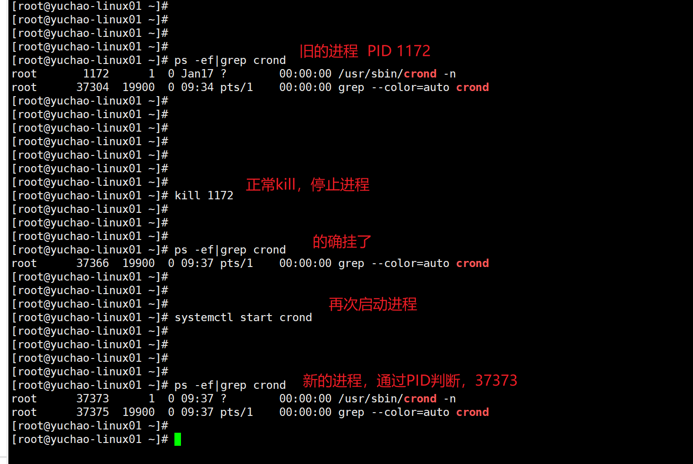
查看kill支持的所有信号
[root@yuchao-linux01 ~]# kill -l
1) SIGHUP 2) SIGINT 3) SIGQUIT 4) SIGILL 5) SIGTRAP
6) SIGABRT 7) SIGBUS 8) SIGFPE 9) SIGKILL 10) SIGUSR1
11) SIGSEGV 12) SIGUSR2 13) SIGPIPE 14) SIGALRM 15) SIGTERM
16) SIGSTKFLT 17) SIGCHLD 18) SIGCONT 19) SIGSTOP 20) SIGTSTP
21) SIGTTIN 22) SIGTTOU 23) SIGURG 24) SIGXCPU 25) SIGXFSZ
26) SIGVTALRM 27) SIGPROF 28) SIGWINCH 29) SIGIO 30) SIGPWR
31) SIGSYS 34) SIGRTMIN 35) SIGRTMIN+1 36) SIGRTMIN+2 37) SIGRTMIN+3
38) SIGRTMIN+4 39) SIGRTMIN+5 40) SIGRTMIN+6 41) SIGRTMIN+7 42) SIGRTMIN+8
43) SIGRTMIN+9 44) SIGRTMIN+10 45) SIGRTMIN+11 46) SIGRTMIN+12 47) SIGRTMIN+13
48) SIGRTMIN+14 49) SIGRTMIN+15 50) SIGRTMAX-14 51) SIGRTMAX-13 52) SIGRTMAX-12
53) SIGRTMAX-11 54) SIGRTMAX-10 55) SIGRTMAX-9 56) SIGRTMAX-8 57) SIGRTMAX-7
58) SIGRTMAX-6 59) SIGRTMAX-5 60) SIGRTMAX-4 61) SIGRTMAX-3 62) SIGRTMAX-2
63) SIGRTMAX-1 64) SIGRTMAX
实际运用中，由于一个进程会牵扯到诸多文件，有时候kill会杀不死进程，可以使用9信号，强制终止，但是一般不要直接强制终止，会导致不可预期的错误。
3.2 kill和nginx
以nginx为例
1.安装、准备nginx页面
[root@yuchao-linux01 ~]# yum install nginx -y
[root@yuchao-linux01 ~]# echo 'yuchao linux v1' > /usr/share/nginx/html/index.html
[root@yuchao-linux01 ~]# echo 'yuchao linux v2' > /usr/share/nginx/html/index2.html
2.启动nginx且查看页面
[root@yuchao-linux01 ~]# systemctl start nginx
[root@yuchao-linux01 ~]# curl 127.0.0.1
yuchao linux v1
3.修改nginx配置文件，更改首页文件为index2.html
38 server {
39 listen 80;
40 listen [::]:80;
41 server_name _;
42 root /usr/share/nginx/html;
43 location / {
44 root /usr/share/nginx/html;
45 index index2.html;
46 }
4.再次访问页面，发现毫无变化，为什么？没重新读取新的配置文件
[root@yuchao-linux01 ~]# curl 127.0.0.1
yuchao linux v1
5.可以选择重启、或者重读新的配置（超哥讲过，可以systemctl reload nginx）
那么systemctl背后是怎么做的，来看！
[root@yuchao-linux01 ~]# rpm -ql nginx |grep nginx.service
/usr/lib/systemd/system/nginx.service
[root@yuchao-linux01 ~]# grep -i 'reload' /usr/lib/systemd/system/nginx.service
ExecReload=/usr/sbin/nginx -s reload
发现人家就是去执行了这个命令而已，nginx -s reload ，那其实你也可以直接去执行这个命令
6.先看看nginx的进程id号
[root@yuchao-linux01 ~]# pstree -p |grep nginx
|-nginx(1486)-+-nginx(1529)
| `-nginx(1530)
我们需要给包工头发一个信号，告诉他，nginx配置文件变化了，你要重新加载下
[root@yuchao-linux01 ~]# kill -1 1486
此时工人进程变化了，工头进程没变化
[root@yuchao-linux01 ~]# pstree -p |grep nginx
|-nginx(1486)-+-nginx(1585)
| `-nginx(1586)
# reload进程后，网站页面得到更新
[root@yuchao-linux01 ~]# curl 127.0.0.1
yuchao linux v2
7.最后可以干掉进程，需要干掉父进程
# 包工头都被干掉了，工人不得跑路么
[root@yuchao-linux01 ~]# kill 1486
[root@yuchao-linux01 ~]# pstree -p |grep nginx
4、killall、pkill关闭进程
1. kill需要找到pid，然后再干掉进程
2. pkill更省事了，直接根据进程名字干掉进程
3. 注意pkill，kill可能会误杀，因为是根据进程名字匹配，如果进程包含了某名字，也会被杀掉，因此少用。
命令：killall
作用：通过程序的==进程名==来杀死==一类==进程
语法：# killall [信号] 进程名称
信号种类：和kill相同，这里不再重复
kill是终止单独一个进程
killall是根据进程名字，终止一类进程
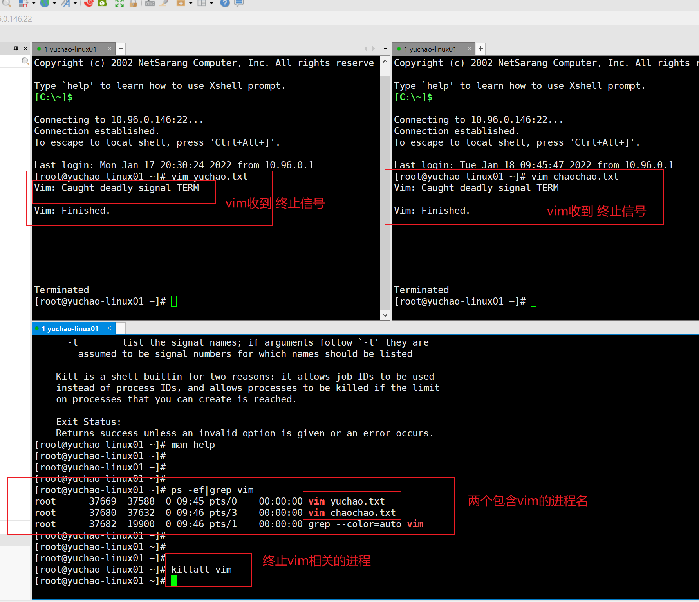
为了避免出错，误操作，干掉了其他进程。
可以尽量使用kill即可
补充：进程后台运行
程序运行可以有2种
- 前台运行
- 程序运行在当前的终端，所有的信息都输出到屏幕上，占用你的终端，你也无法继续使用
- 如果终端异常关闭，导致程序会自动退出
- 后台运行
- 不会占用你的终端，程序在系统后台跑着，你该干啥干啥，终端关了，程序也继续运行。
后台运行命令
命令集合
command & # 未启动的command放入后台去运行
jobs # 查看后台进程列表
ctrl + z # 暂停进程
bg # 程序放入后台运行，和 & 一样
fg # 将后台任务放入前台执行
后台命令实战（实战经验）
1.命令直接放入后台运行，注意日志写入到黑洞文件
[root@yuchao-linux01 ~]# ping yuchaoit.cn > /dev/null &
[1] 1718
[root@yuchao-linux01 ~]#
2.查看后台任务列表
[root@yuchao-linux01 ~]# jobs
[1]+ Running ping yuchaoit.cn > /dev/null &
[root@yuchao-linux01 ~]#
3.可以将后台任务，放入前台执行，然后ctrl + z 再次暂停程序，放入后台
[root@yuchao-linux01 ~]# fg 1
ping yuchaoit.cn > /dev/null
^Z
[1]+ Stopped ping yuchaoit.cn > /dev/null
[root@yuchao-linux01 ~]#
[root@yuchao-linux01 ~]#
的确发现了一个停止的程序
[root@yuchao-linux01 ~]# jobs
[1]+ Stopped ping yuchaoit.cn > /dev/null
[root@yuchao-linux01 ~]#
4.可以再次让程序运行起来，并且依然是运行在后台
[root@yuchao-linux01 ~]# bg 1
[1]+ ping yuchaoit.cn > /dev/null &
[root@yuchao-linux01 ~]#
[root@yuchao-linux01 ~]#
[root@yuchao-linux01 ~]# jobs
[1]+ Running ping yuchaoit.cn > /dev/null &
[root@yuchao-linux01 ~]#
补充：screen命令
作为linux服务器管理员,经常要使用ssh登陆到远程linux机器上做一些耗时的操作。
也许你遇到过使用telnet或SSH远程登录linux,运行一些程序。如果这些程序需要运行很长时间(几个小时)，而程序运行过程中出现网络故障，或者客户机故障，这时候客户机与远程服务器的链接将终端，并且远程服务器没有正常结束的命令将被迫终止。
又比如你SSH到主机上后，开始批量的scp命令，如果这个ssh线程断线了，scp进程就中断了。
在远程服务器上正在运行某些耗时的作业，但是工作还没做完快要下班了，退出的话就会中断操作了，如何才好呢？
screen命令作用
GNU Screen是一款由GNU计划开发的用于命令行终端切换的自由软件。用户可以通过该软件同时连接多个本地或远程的命令行会话，并在其间自由切换。
GNU Screen可以看作是窗口管理器的命令行界面版本。
它提供了统一的管理多个会话的界面和相应的功能。
- 会话恢复
只要Screen本身没有终止，在其内部运行的会话都可以恢复。
这一点对于远程登录的用户特别有用——即使网络连接中断，用户也不会失去对已经打开的命令行会话的控制。
只要再次登录到主机上执行screen -r就可以恢复会话的运行。
同样在暂时离开的时候，也可以执行分离命令detach，在保证里面的程序正常运行的情况下让Screen挂起（切换到后台）。
这一点和图形界面下的VNC很相似。
- 多窗口
在Screen环境下，所有的会话都独立的运行，并拥有各自的编号、输入、输出和窗口缓存。用户可以通过快捷键在不同的窗口下切换，并可以自由的重定向各个窗口的输入和输出。
Screen实现了基本的文本操作，如复制粘贴等；还提供了类似滚动条的功能，可以查看窗口状况的历史记录。窗口还可以被分区和命名，还可以监视后台窗口的活动。
- 会话共享
Screen可以让一个或多个用户从不同终端多次登录一个会话，并共享会话的所有特性（比如可以看到完全相同的输出）。它同时提供了窗口访问权限的机制，可以对窗口进行密码保护。
screen命令参数
screen -S 终端名称 # 新建一个指定名称的终端
ctrl + a + d 切换 # detach，暂时离开当前会话，将screen任务丢到后台执行，回到还未进入screen的状态
screen -ls # 显示存在的screen进程，常用命令
screen -r 终端名或iD # 进入指定名称的screen会话
screen -m # 如果在一个Screen进程里，用快捷键crtl+a c或者直接打screen可以创建一个新窗口,screen -m 也可以可以新建一个screen进程。
常规用法
screen -D -r 踢掉screen的用户，让其logout，然后再连接该会话（当screen会话是Attached状态，表示有人在用）
实践
1.安装命令
[root@yuchao-linux01 ~]# yum install screen -y
2.创建screen终端
screen -S about_echo
3.可以再开一个窗口，查看该进程
[root@yuchao-linux01 ~]# ps -ef|grep screen
root 2677 2340 0 17:24 pts/0 00:00:00 screen -S about_echo
root 2691 2532 0 17:24 pts/2 00:00:00 grep --color=auto screen
注意看该会话的状态
[root@yuchao-linux01 ~]# screen -ls
There is a screen on:
2678.about_echo (Attached)
1 Socket in /var/run/screen/S-root.
4.使用about_echo这个终端，执行命令，如
不断的向文件中写入信息
[root@yuchao-linux01 ~]# for i in `seq 5000`;do sleep 1; echo '超哥带你学linux' >> /tmp/cc.log;done
5.用快捷键切出后台 ctrl + a + d组合键，将任务放入后台，任务不会中断
[root@yuchao-linux01 ~]# screen -S about_echo
[detached from 2678.about_echo]
6.用命令，恢复到指定的离线screen进程中，然后你可以选择中断该进程
screen -r about_echo
7.最后你可以exit，退出，结束这个终端，没有后台进程了。
[root@yuchao-linux01 ~]# screen -ls
No Sockets found in /var/run/screen/S-root.
[root@yuchao-linux01 ~]# ps -ef|grep screen
root 2817 2532 0 17:27 pts/2 00:00:00 grep --color=auto screen
5、nohup命令
nohup 英文全称 no hang up（不挂起），用于在系统后台不挂断地运行命令，退出终端不会影响程序的运行。
nohup的特点是：
nohup 命令，在默认情况下（非重定向时），会输出一个名叫 nohup.out 的文件到当前目录下
如果当前目录的 nohup.out 文件不可写，输出重定向到$HOME/nohup.out 文件中。
一般和 & 后台符，结合使用。
记住一个标准用法
no
语法nohup command 选项 &
Command：要执行的命令。
Arg：一些参数，可以指定输出文件。
&：让命令在后台执行，终端退出后命令仍旧执行。
nohup不加&符号（不好用）
有些命令会前台运行，占用一个会话窗口，无法做其他事
且关闭窗口后，该任务会结束，导致工作中断
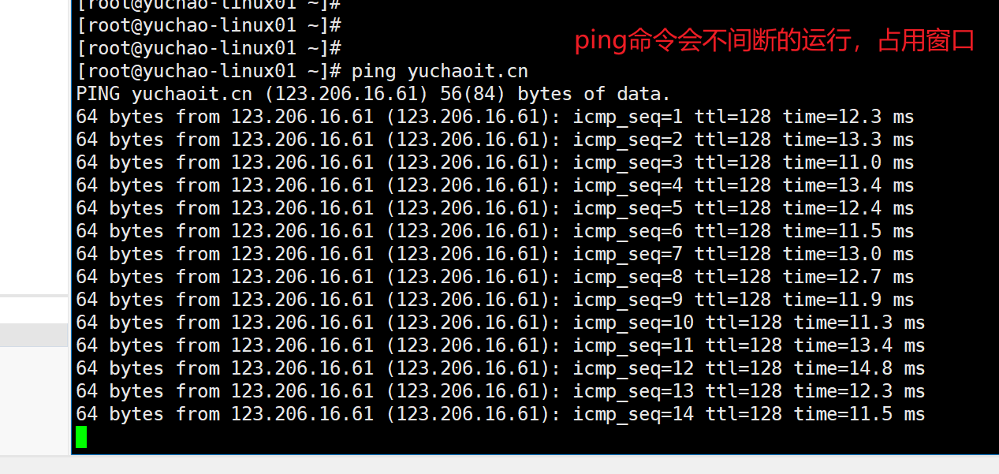
关闭窗口，前台任务挂掉
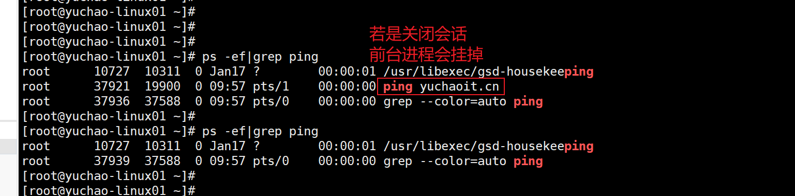
nohup让进程后台运行
nohup 命令，后面若是不跟其他选项，默认写入当前路径下的nohup.out文件日志
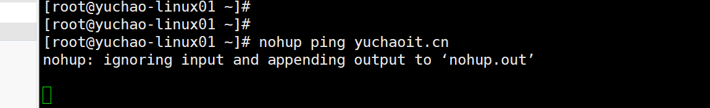
不加&符号的话，该命令会卡主一个会话窗口，也是不好用
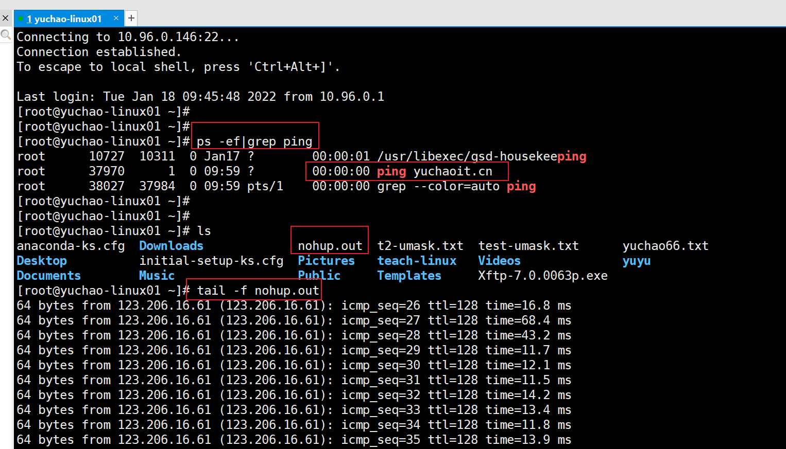
nohup添加&符号（好用）
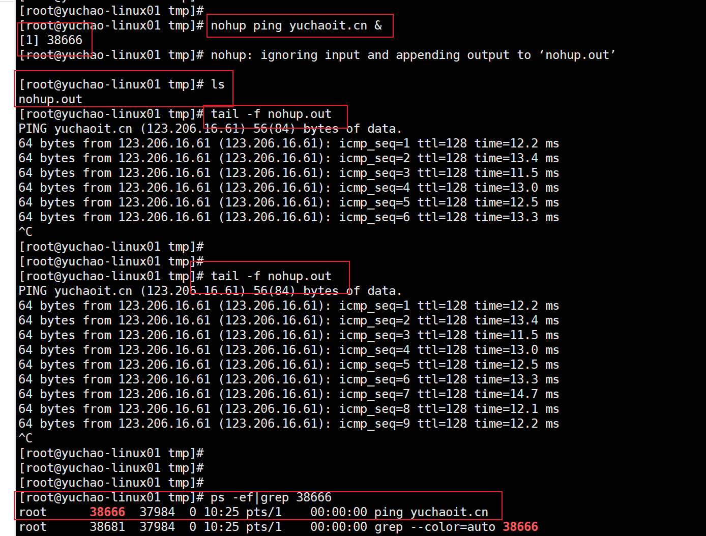
nohup 生产环境下的用法（重要）
[root@yuchao-tx-server ~]# nohup ping baidu.com > /tmp/nohup_ping.log 2>&1 &
[1] 31021
[root@yuchao-tx-server ~]# jobs
[1]+ 运行中 nohup ping baidu.com > /tmp/nohup_ping.log 2>&1 &
[root@yuchao-tx-server ~]#
[root@yuchao-tx-server ~]# tail -f /tmp/nohup_ping.log
64 bytes from 220.181.38.148 (220.181.38.148): icmp_seq=1 ttl=50 time=5.50 ms
64 bytes from 220.181.38.148 (220.181.38.148): icmp_seq=2 ttl=50 time=5.52 ms
64 bytes from 220.181.38.148 (220.181.38.148): icmp_seq=3 ttl=50 time=5.45 ms
64 bytes from 220.181.38.148 (220.181.38.148): icmp_seq=4 ttl=50 time=5.50 ms
64 bytes from 220.181.38.148 (220.181.38.148): icmp_seq=5 ttl=50 time=5.50 ms
关闭窗口，程序也不会中断，只有通过ps命令可以看到该进程，还在运行了。
6、理解linux的数据流
执行linux命令时，linux默认为用户进程提供了3种数据流
- stdin
- 标准输入、0
- 一般是键盘输入数据
- 比如cat命令等待用户输入
- stdout
- 标准输出、1
- 程序执行结果，输出到终端
- stderr
- 标准错误输出
- 程序执行结果，输出到终端
6.1 标准输入
cat 接收键盘的输入数据，然后打印到终端，直到ctrl +d 结束输入
[root@yuchao-tx-server ~]# cat
hello
hello
我爱你
我爱你
6.2 标准输出
[root@yuchao-linux01 ~]# ls /opt/
HelloWorld.class HelloWorld.java jdk jdk1.8.0_221 jdk-8u221-linux-x64.tar.gz passwd
6.3 标准错误输出
[root@yuchao-linux01 ~]# ls /opppp > stderr.txt
ls: cannot access /opppp: No such file or directory
6.4 数据重定向
我们发现，数据流的输入、输出，都是直接显示在屏幕上，然后你貌似做不了更多处理，不够强大。
因此linux系统提供了数据重定向符号，让你能够对数据再次做处理。
6.4.1 输入重定向
输入重定向是指把命令（或可执行程序）的标准输入，重定向到指定的文件中。
也就是说，输入可以不来自键盘，而来自一个指定的文件。
比如依然是是cat命令，原本应该是，等待键盘输入数据
现在是通过输入重定向符号，将标准输入stdin，改为了文件数据作为输入。
[root@yuchao-linux01 ~]# cat < t1.log
于超老师带你学Linux
666
666
6.4.2 输出重定向（重要）
输出重定向是指把命令（或可执行程序）的标准输出或标准错误输出重新定向到指定文件中。
这样，该命令的输出就不显示在屏幕上，而是写入到指定文件中。
使用 “ > ”符号，将标准输出重定向到文件中。形式为：命令>文件名
使用“ >> ”符号，将标准输出结果追加到指定文件后面。形式为：命令>>文件名
使用“ 2> ”符号，将标准错误输出重定向到文件中。形式为：命令 2> 文件名
使用“ 2>> ”符号，将标准错误输出追加到指定文件后面。形式为：命令 2>>文件名
使用“ 2>&1 ”符号或“ &> ”符号，将把标准错误输出stderr重定向到标准输出stdout
使用“ >/dev/null ”符号，将命令执行结果重定向到空设备中，也就是不显示任何信息。
重定向基本用法
[root@yuchao-tx-server ~]# echo '超哥带你学linux' > test.log
[root@yuchao-tx-server ~]#
[root@yuchao-tx-server ~]# echo '超哥带你学linux' >> test.log
错误重定向追加
[root@yuchao-tx-server ~]# echhhho '超哥带你学linux' 2>> test.log
[root@yuchao-tx-server ~]#
[root@yuchao-tx-server ~]# cat test.log
超哥带你学linux
超哥带你学linux
-bash: echhhho: 未找到命令
将stderr重定向到stdout，就可以防止程序运行出错，导致程序异常
写法1
[root@yuchao-tx-server ~]# echhhho '超哥带你学linux' &>> test.log
写法2
[root@yuchao-tx-server ~]# echhhho '超哥带你学linux' >> test.log 2>&1
黑洞文件，空设备文件，也同样遵循，stdout、stderr的语法
[root@yuchao-tx-server ~]# echo '超哥带你学linux' &>> /dev/null
[root@yuchao-tx-server ~]# echhhhho '超哥带你学linux' &>> /dev/null
2>&1 解释
上面我们是把ping命令的输出，写入到nohup.out文件里，我们也可以指定一个文件，将命令的执行结果，写入进文件。
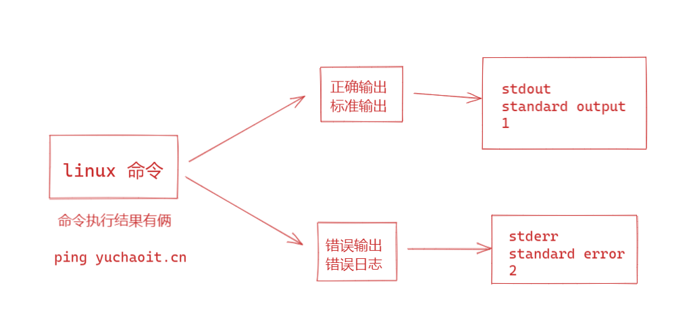
图解stdout/stderr
标准输出stdout就是一个命令会有正确的执行结果，在屏幕上显示出，让用户看见。
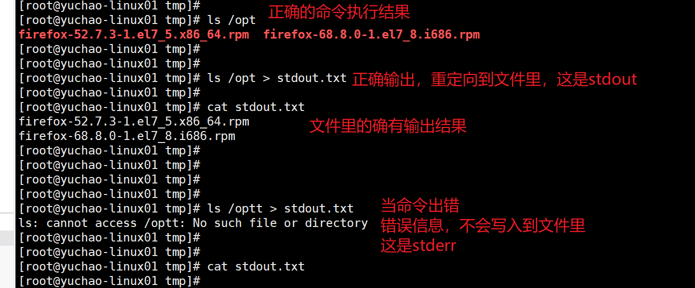
标准错误输出，上面已经看到了，那如何获取标准错误输出呢？
比如这个程序出错的信息，我也想收集下来，写入到日志。
通过这个语法，即可
==把标准错误输出，重定向，写入到标准输入==
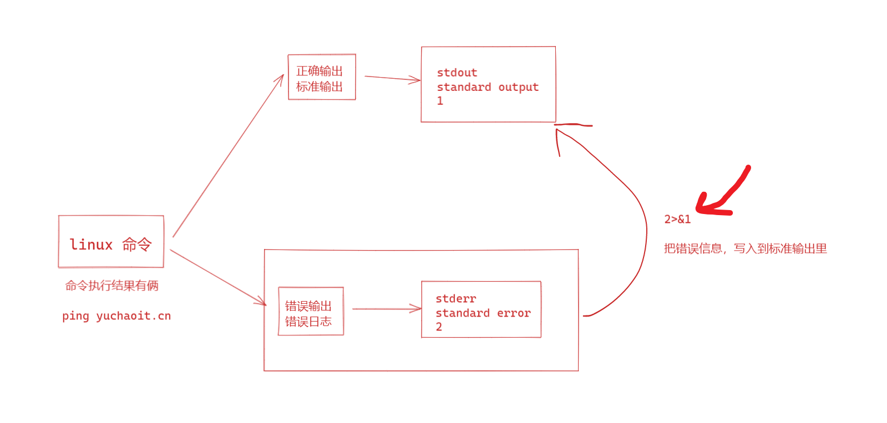
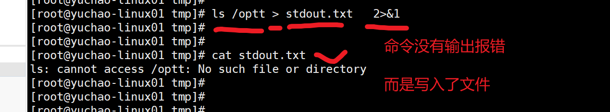
stdouer+stderr
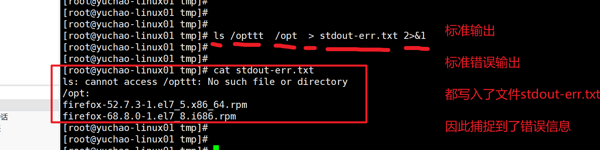
三、机器负载查看
3.1 系统平均负载查看uptime
系统负载指的是在单位时间内，系统分配给CPU处理的进程数量，必然是数量越多，负载值越高，机器的压力越大。
uptime命令
[root@yuchao-linux01 ~]# uptime
17:45:12 up 2:13, 2 users, load average: 0.00, 0.01, 0.05
这个load average表示平均负载，多少数值比较合适？
1.最理想化的状态是每个CPU都在运行着进程，充分让cpu工作起来，效率最大化，你得先看看你机器上有几个CPU（几个核，就是有几个cpu可以工作）。
# 发现是4核的
[root@yuchao-linux01 ~]# lscpu |grep -i '^cpu(s)'
CPU(s): 4
# 以及用top命令，按下数字1，查看几核。
top
2. 如何理解uptime看到的负载
分别是1、5、15分钟内的平均负载情况，表示是1~15分钟内CPU的负载变化情况。
1. 三个值如果差不多，表示系统很稳定的运行中，15分钟以内，CPU都没有很忙
2. 如果1分钟内的值，远大于15分钟的值，表示机器在1分钟内压力在直线上升
3. 如果1分钟内的值，小于15分钟的值，表示系统的负载正在下降中
如何监控系统负载的趋势？
实际工作中，uptime是运维临时看一看机器的压力的，具体的还得
1. 编写shell脚本，结合定时任务，周期性的查看uptime命令的结果，写入到文件中，综合判断机器压力情况。
2. 使用成熟的监控软件，如zabbix、Prometheus，他们有丰富的图形化报表展示，可以从可视化下，轻松掌握机器压力。
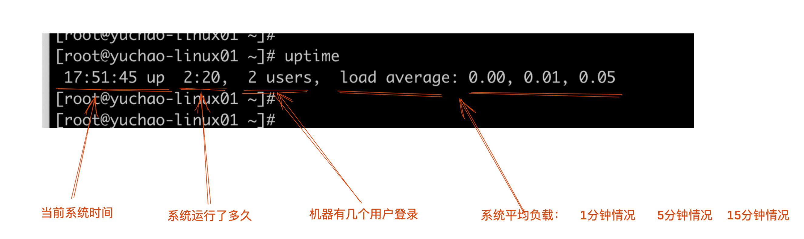
3.2 CPU压力测试（超哥硬核讲解）
cpu的压力，来自于高频的计算任务，比如数值计算等，我们可以用bash程序，python程序，以及各种编程语言，来实现复杂的高频率计算。
这里我们用几个工具
stress stress是一个linux的压力测试工具，专门用于对设备的CPU、IO、内存、负载、磁盘等进行压测。
mpstat 多核CPU性能分析
pidstat 实时查看cpu、内存、io等指标
实践
1.安装stress工具
yum install stress -y
3.2.1 sysstat工具包
sysstat是一个软件包，包含监测系统性能及效率的一组工具，这些工具对于我们收集系统性能数据，比如：CPU 使用率、硬盘和网络吞吐数据，这些数据的收集和分析，有利于我们判断系统是否正常运行，是提高系统运行效率、安全运行服务器的得力助手。
包含的工具
iostat
输出CPU的统计信息和所有I/O设备的输入输出（I/O）统计信息
mpstat
mpstat是Multiprocessor Statistics的缩写，是实时系统监控工具。其报告与CPU的一些统计信息，这些信息存放在/proc/stat文件中。在多CPUs系统里，其不但能查看所有CPU的平均状况信息，而且能够查看特定CPU的信息。mpstat最大的特点是：可以查看多核心cpu中每个计算核心的统计数据；而类似工具vmstat只能查看系统整体cpu情况。
pidstat
关于运行中的进程/任务、CPU、内存等的统计信息
sar
保存并输出不同系统资源（CPU、内存、IO、网络、内核等）的详细信息
sadc
系统活动数据收集器，用于收集sar工具的后端数据
sa1
系统收集并存储sadc数据文件的二进制数据，与sadc工具配合使用
sa2
配合sar工具使用，产生每日的摘要报告
sadf
用于以不同的数据格式（CVS或者XML）来格式化sar工具的输出
sysstat
sysstat 工具包的 man 帮助页面。
nfsiostat
NFS（Network File System）的I/O统计信息
cifsiostat
CIFS(Common Internet File System)的统计信息
官方网站: http://sebastien.godard.pagesperso-orange.fr
1.安装该工具包
[root@yuchao-linux01 ~]# yum install sysstat stress -y
2.对cpu压测，stress命令
# -c, --cpu N 产生 N 个进程，每个进程都反复不停的计算随机数的平方根
# -t, --timeout N 在 N 秒后结束程序
# 跑满2个cpu核，
[root@yuchao-linux01 ~]# stress --cpu 2 --timeout 600
stress: info: [3782] dispatching hogs: 2 cpu, 0 io, 0 vm, 0 hdd
3. 再开一个终端，查看机器的负载情况
一分钟内的CPU压力飙升
[root@yuchao-linux01 ~]# uptime
19:01:26 up 3:29, 2 users, load average: 1.35, 0.45, 0.19
4. 用watch命令，高亮检测哪些数值在变化
[root@yuchao-linux01 ~]# watch -d uptime
5.可以用mpstat命令查看cpu状态细节
-P {|ALL} 表示监控哪个CPU， cpu在[0,cpu个数-1]中取值
#查看多核CPU核心的当前运行状况信息， 每5秒更新一次
[root@yuchao-linux01 ~]# mpstat -P ALL 5
可以清晰的看到，哪一个cpu核，压力最大，通过%usr看到用户进程，消耗了100%的cpu。
6.也可以用top命令检测cpu压力，发现是有2个stress进程，占据了100%的cpu
top - 19:07:46 up 3:36, 2 users, load average: 1.33, 1.38, 0.74
Tasks: 131 total, 4 running, 127 sleeping, 0 stopped, 0 zombie
%Cpu0 :100.0 us, 0.0 sy, 0.0 ni, 0.0 id, 0.0 wa, 0.0 hi, 0.0 si, 0.0 st
%Cpu1 : 0.0 us, 0.0 sy, 0.0 ni,100.0 id, 0.0 wa, 0.0 hi, 0.0 si, 0.0 st
%Cpu2 : 0.0 us, 0.0 sy, 0.0 ni,100.0 id, 0.0 wa, 0.0 hi, 0.0 si, 0.0 st
%Cpu3 :100.0 us, 0.0 sy, 0.0 ni, 0.0 id, 0.0 wa, 0.0 hi, 0.0 si, 0.0 st
KiB Mem : 7992344 total, 7450560 free, 139564 used, 402220 buff/cache
KiB Swap: 2097148 total, 2097148 free, 0 used. 7573368 avail Mem
PID USER PR NI VIRT RES SHR S %CPU %MEM TIME+ COMMAND
3955 root 20 0 7312 100 0 R 100.0 0.0 0:10.55 stress
3954 root 20 0 7312 100 0 R 99.6 0.0 0:10.54 stress
1 root 20 0 125460 3896 2584 S 0.0 0.0 0:02.25 systemd
如上于超老师讲解的命令，你可以在生产环境下，检测服务器资源使用率情况，判断出是什么进程，占用了较多的cpu资源。
free查看内存使用情况
命令：free
作用：查看内存使用情况
语法：#free -m
选项：
-m 表示以mb为单位查看（1g = 1024mb，1mb = 1024kb）
-h 以可读形式显示容量，需要free -V显示版本大于3.3
默认free命令是 KB单位
[root@yuchao-linux01 ~]# free
total used free shared buff/cache availableMem: 7992344 139320 7450696 12012 402328 7573516Swap: 2097148 0 2097148
top可以理解为资源管理器，整体掌握系统资源使用情况。
针对内存，可以专门用free命令
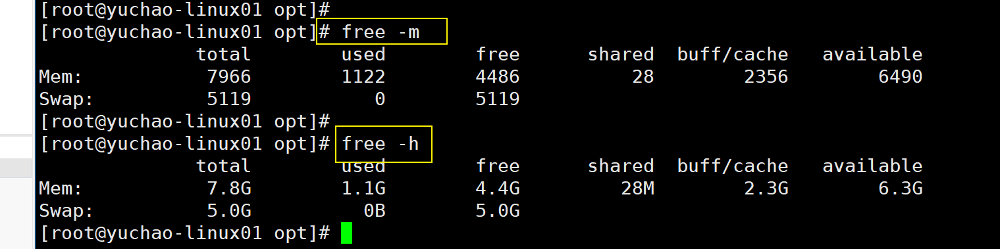
明显的，以G为单位，看起来更直观点，阅读的数字较小。
free 命令主要是用来查看内存和 swap 分区的使用情况的，其中：
- total：是指物理内存总大小，信息来自于
/proc/meminfo - used：是指已经使用的内存，
userd=total-free-buffers-cache - free：是指空闲的；
free = total - used - buff - cache - shared：是指共享的内存；用于tmpfs系统
- buff/cache
- buffers：缓冲区，写入缓冲，用于内存和磁盘之间的数据写入缓冲，存放内存需要写入到磁盘的数据。
- cached：缓存区，读取缓存，加快CPU和内存数据交换，存放内存已经读取完毕的数据。
关于第二行的swap，现状是完全关掉这个功能的。
第2行数据是Swap交换分区，也就是我们通常所说的虚拟内存（硬件交换分区）。
防止内存用完导致系统崩溃，临时拿硬盘的一些空间当做内存使。
buff和cache
- buffer，==缓冲区==，buffers是给==写入数据==加速的
- Cache，==缓存==，Cached是给==读取数据==时加速的
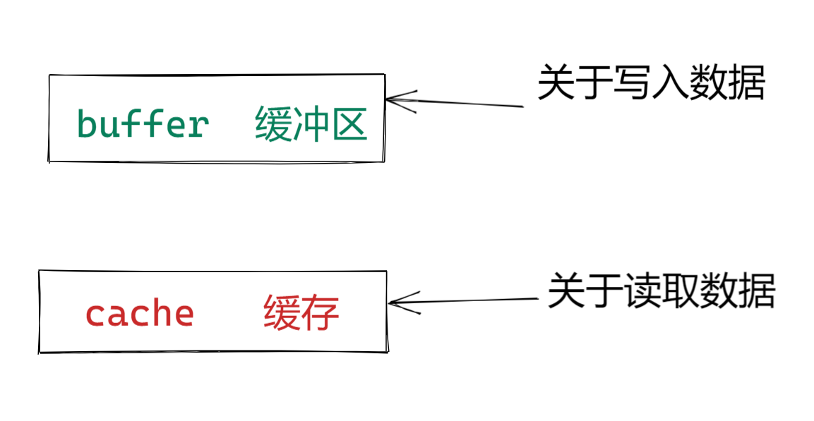
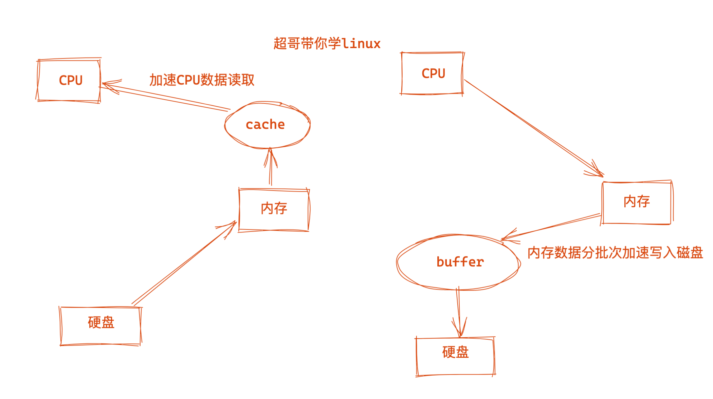
图解cache
==cache是指，把读取磁盘而来，的数据保存在内存中，再次读取，下一次不用读取硬盘，而直接从内存中读取，加速数据读取过程。==
硬件读写速度排名
磁盘 > 内存 > CPU
为了提高CPU、内存之间的数据交换效率，linux设计了cache这种技术。CPU本身也就支持缓存，但是CPU内部的缓存太贵，容量都太小，因此引入内存空间来存放CPU读取过的数据，下次CPU再读取数据，直接去cache中读，不用再去内存里寻找了。
简单理解，cache缓存，好比你的快递，临时放在了驿站，就在你家附近，省的你去总站去拿数据，多累。
- 驿站大幅度减轻了总站的取快递压力（减少了磁盘的压力）
- 同时也加快了用户拿到快递的时间，用户更开心了（拿到磁盘数据更快了，省时间了）
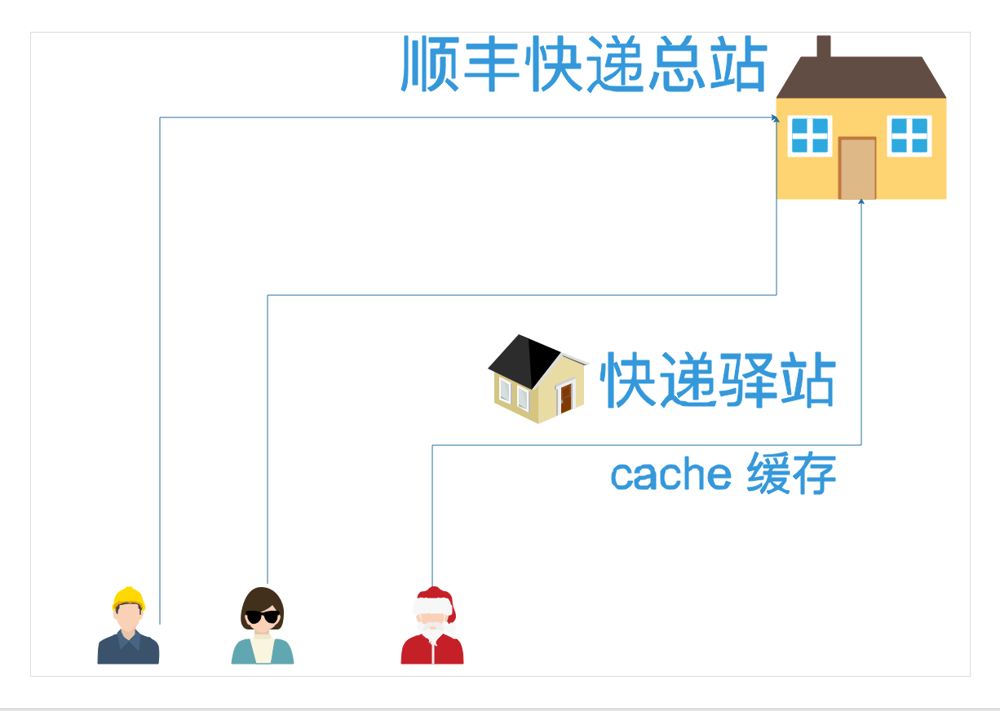
图解buffer
内存的读取、写入速度是远超硬盘的，为了提高数据写入硬盘的效率，linux设计了buffer技术。
buffer缓冲区的作用是将内存写完的数据缓存起来，通过系统调度策略在合适的时候，定期刷新到磁盘中。
以此减少磁盘的寻址次数，提高写入数据的能力。
==buffer是指写入数据时，把分散的写入操作保存到内存，达到一定程度集中写入硬盘，减少磁盘碎片，以及反复的寻道时间，加速数据写入。==
可以理解为果园运输草莓
1.超哥去草莓园摘草莓，使用编织篮采摘
2.摘完一筐一筐草莓后，一起倒进运输车
而非，摘一个扔进车里一个，那效率是不是老慢了？
好比BT下载资料，电脑需要长时间24h的挂机运转，但是BT下载是碎片化的。
如果直接写入磁盘也是零散的数据，由于机械磁盘的特性，写入大量零散的数据，会造成磁盘高负荷的机械运动，增加寻址时间，造成硬盘过早老化而损坏。
因此引入buffer，当数据攒到一定程度，例如512MB的时候，再一次性写入磁盘，这种化零为整的写入方式，大大降低了磁盘的负荷。
总结cache、buffer
- 这俩都是计算机的重要属性，不仅在内存，磁盘里有使用，后面的网站架构篇，也多处使用到缓存的概念。
- cache解决的时间问题，提高数据读取速度
- cache利用的是内存极快的速度特性，读写速度是磁盘的很多倍。
- buffer解决的是空间问题，给数据写入提供一个暂存空间
- 磁盘对碎片化的数据处理，是很低效的，我们后面学习磁盘管理，即可更深入理解
- buffer利用的是内存的存储特性。
四、磁盘管理
df 查看磁盘信息
命令：df
作用：查看磁盘的空间(disk free)
语法：# df [-h]
选项：-h表示可读性较高的形式展示大小
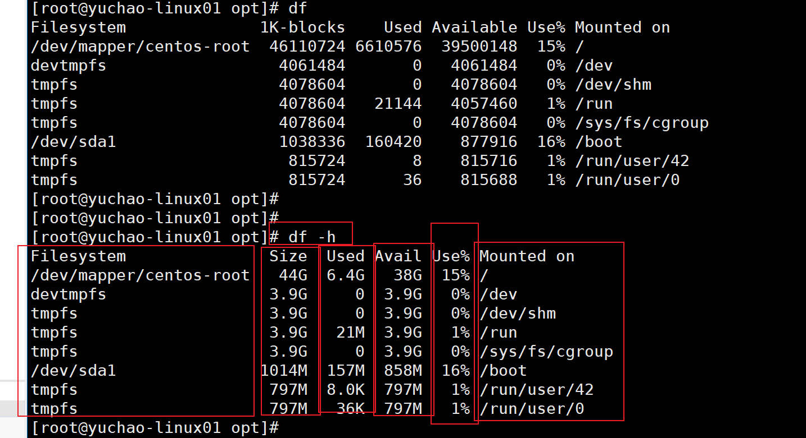
| Filesystem | 磁盘名称(文件系统名称) |
|---|---|
| Size | 总大小，总容量 |
| Used | 已经使用的容量 |
| Avail | 剩余可用容量 |
| Use% | 使用百分比 |
| Mounted on | 挂载路径（相当于Windows 的磁盘符）（访问挂载点即可访问到该设备的数据） |
上述结果可以看出，根目录，也就是系统总容量是44G，还剩下38G可用，用了15%。
4.1 磁盘io监控(iotop)
iotop命令 是一个用来监视磁盘I/O使用状况的top类工具。
iotop具有与top相似的UI，其中包括PID、用户、I/O、进程等相关信息。
1.安装iotop
[root@yuchao-linux01 ~]# yum install iotop -y
2.常用命令参数
-o：只显示有io操作的进程
-b：批量显示，无交互，主要用作记录到文件。
-n NUM：显示NUM次，主要用于非交互式模式。
-d SEC：间隔SEC秒显示一次。
-p PID：监控的进程pid。
-u USER：监控的进程用户。
-k 以kB单位显示读写数据信息
3.常用快捷键
左右箭头：改变排序方式，默认是按IO排序。
r：改变排序顺序。
o：只显示有IO输出的进程。
p：进程/线程的显示方式的切换，切换pid、tid
a：显示累积使用量
q：退出。
实践
1.显示默认信息
[root@yuchao-linux01 ~]# iotop
2.以kb单位显示io进程
[root@yuchao-linux01 ~]# iotop -k
iotop字段解释
第一行、磁盘读写的速率总计
第二行，磁盘读写的实际速率
第三行，具体的进程/线程，速率详细信息。
Total DISK READ : 143780.40 K/s | Total DISK WRITE : 0.00 K/s
Actual DISK READ: 143780.40 K/s | Actual DISK WRITE: 181263.57 K/s
TID PRIO USER DISK READ DISK WRITE SWAPIN IO> COMMAND
820 be/4 root 379.82 K/s 0.00 K/s 0.00 % 0.02 % irqbalance --foreground
818 be/4 root 79.13 K/s 0.00 K/s 0.01 % 0.01 % vmtoolsd
4611 be/4 jerry01 143321.46 K/s 0.00 K/s 22.81 % 0.00 % -bash
TID # 线程id，按下p，切换进程PID
PRIO # 优先级
USER # 运行的用户
DISK READ # 读取速率
DISK WRITE # 写入速率
SWAPIN # swap交换分区的百分比
IO # IO等待百分比
COMMAND # 进程名
五、网络管理
5.1 网络简单了解
网络知识，涉及较多的原理性概念，放在后面再讲，先学实践性的linux操作。
计算机网络，就是一堆协议组成起来的。
- 于超老师给大家发送linux学习资料，是直接通过电脑，把文件等资料发到你们的机器上，至于怎么发的，我们就知道是得确保我们互相的机器都能上网，资料就发过去了。
- 如果没有网络，我们两人的计算机，需要插上网线，将两个机器连接起来，才能进行数据传输，但是现在有了更方便的网络，蓝牙等无线信号，能够隔空传输数据了。
- 不限于机器时间的文件传输，还有其他各种需求，域名解析、www网络服务，ping命令的icmp协议，VPN的特殊协议，时间同步的ntp协议、等等，这些协议是专业网络工程师要去学习的。
而我们作为系统工程师，更多的是关注linux操作系统本身，对于网络有一定的认识，能够进行运维工作实践即可，当然后期，晋升高级运维，学习的内容越来越复杂，必然要对网络有更多的认识。
全世界找不出任何一个人能搞懂网络传输的过程，因为其中涉及了太复杂的数据交换，你只需要记住。
- 好比你发快递，记住发送人是谁，收件人是谁，具体这个快递是经过了山路十八弯，还是去南极跑了一圈，你不用管，你关心最后快递能送到即可。
- 你只需要关心，你和对方的服务器，是否能通信即可。
5.2 网络协议之TCP、UDP
我们学习netstat命令的话，会看到tcp、udp的字样，解释如下。
Tcp
udp
至于计算机的网络，简单了解下这个过程。
机器得有网卡、得插网线（物理层）
↓
机器上的网络适配器能拿到ip地址
↓
计算机之间可以基于ip地址，进行数据交互
（基于tcp协议的数据交互，李文杰想给于超老师发一个小电影，两个人一拍即合，满心欢喜，握手言和，达成一致目的）
（基于udp协议的数据交互，李文杰不管超哥爱不爱看小电影，反正一顿发数据，直到把超哥的机器占满网络带宽，卡死）
↓
丰富的应用层协议（如网站服务的HTTP协议）
5.3 netstat查看进程网络访问
命令：netstat
作用：查看网络连接状态
语法：netstat -tnlp
选项：
-t：表示只列出tcp 协议的连接；
-n：表示将地址从字母组合转化成ip 地址，将协议转化成端口号来显示；
-l ：表示过滤出"state（状态）"列中其值为LISTEN（监听）的连接；
-p：表示显示发起连接的进程pid 和进程名称；
Protocol：协议（tcp、upd、http、https、icmp、ssh…）
Receive：接收
Send：发送
Local Address:本地地址
Foreign：远程地址
State：状态，LISTEN表示侦听来自远方的TCP端口的连接请求
PID/Program name：进程ID和程序名
用法
1.linux允许一个服务，基本会打开一个端口，如sshd打开22端口，其他服务也一样用法，结合grep即可
如果找不到对应信息，则得考虑是名字敲错了，还是服务未运行。
[root@yuchao-linux01 ~]# netstat -tnlp |grep 22
tcp 0 0 192.168.122.1:53 0.0.0.0:* LISTEN 1810/dnsmasq
tcp 0 0 0.0.0.0:22 0.0.0.0:* LISTEN 1156/sshd
tcp6 0 0 :::22 :::* LISTEN 1156/sshd
5.4 ss命令
ss 是类似netstat的工具。能显示查看网络状态信息，包括TCP、UDP连接，端口
并且性能远比netstat强悍，适合用于高并发服务器查看
-a 显示所有网络连接
-l 显示LISTEN状态的连接(连接打开)
-m 显示内存信息(用于tcp_diag)
-n, --numeric 不显示域名，直接显示ip地址
-o 显示Tcp 定时器x
-p 显示进程信息
-s 连接统计
-d 只显示 DCCP信息 (等同于 -A dccp)
-u 只显示udp信息 (等同于 -A udp)
-w 只显示 RAW信息 (等同于 -A raw)
-t 只显示tcp信息 (等同于 -A tcp)
-x 只显示Unix通讯信息 (等同于 -A unix)
-4 只显示 IPV4信息
-6 只显示 IPV6信息
--help 显示帮助信息
--version 显示版本信息
实践
# 查看所有的tcp连接
[root@yuchao-linux01 ~]# ss -t
State Recv-Q Send-Q Local Address:Port Peer Address:Port
ESTAB 0 148 192.168.0.240:ssh 192.168.0.115:59610
ESTAB 0 0 192.168.0.240:ssh 192.168.0.115:53054
# 查看所有的udp连接
[root@yuchao-linux01 ~]# ss -u -a
State Recv-Q Send-Q Local Address:Port Peer Address:Port
# 常用组合
# 显示tcp、udp、ip地址、监听中的连接、进程信息
[root@yuchao-linux01 ~]# ss -tunlp
5.5 网络流量监控命令iftop
作用和top和iotop一样，动态显示机器上，网卡的流量动态
[root@yuchao-linux01 ~]# yum install iftop -y
查看系统流量变化
yum install java -y